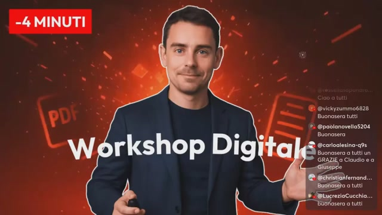
OCR: -4 MINUTI
Sottotitoli e revisione a cura di QTSS Sottotitoli e revisione a cura di QTSS
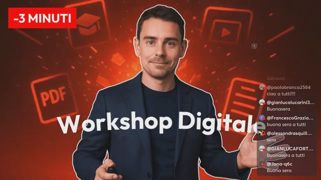
OCR: -3 MINUTI
Sottotitoli e revisione a cura di QTSS Sottotitoli e revisione a cura di QTSS
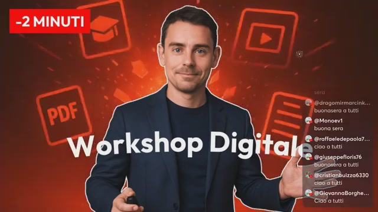
OCR: -2 MINUTI
Sottotitoli e revisione a cura di QTSS Sottotitoli e revisione a cura di QTSS
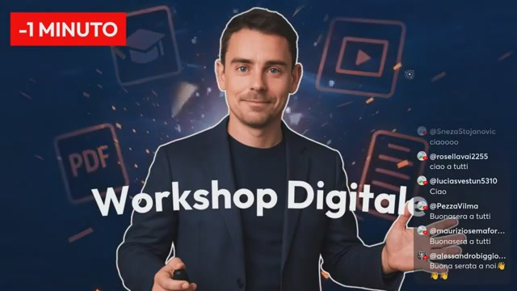
Sottotitoli e revisione a cura di QTSS Sottotitoli e revisione a cura di QTSS Sottotitoli e revisione a cura di QTSS
OCR: EE @ abavideFacchi-nSi Buona sero atti @ @simonocontu6823 Buonoserazazaa \® @volentinatiberti788 Buonasera @ osimonamiotovic. ‘Buonasera 0 tutti @domenicogioeeh. Buono ser. e due
Sottotitoli e revisione a cura di QTSS Sottotitoli e revisione a cura di QTSS Sottotitoli e revisione a cura di QTSS
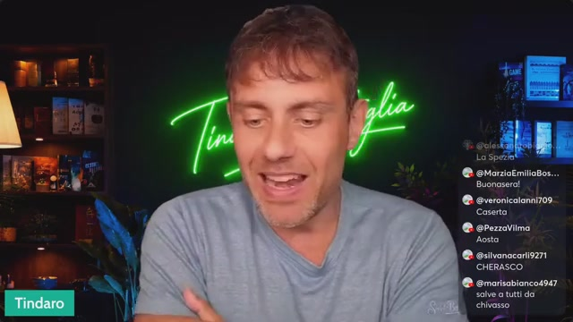
OCR: @ @MorziogmilioBos... @ @veronicolonni709 Caserta @ apezzviimo Ros @ asivonoconiozri CHERASCO @ @morisobionco4947 ve tutti da chivasso.
Sottotitoli e revisione a cura di QTSS Sottotitoli e revisione a cura di QTSS Sottotitoli e revisione a cura di QTSS
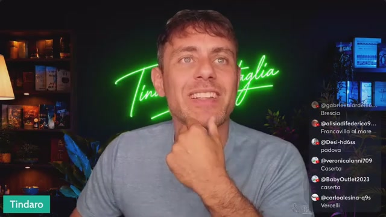
OCR: “Ni Brescia ® aaliziodifederico9... Francavilla cl mere ‘@ @veronicalanni709 Caserta @ ©B0byouttet2023 sera
Sottotitoli e revisione a cura di QTSS Sottotitoli e revisione a cura di QTSS Sottotitoli e revisione a cura di QTSS
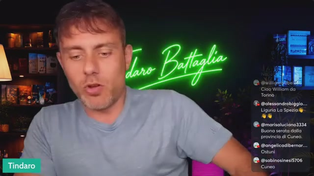
OCR: e ADE Cico Willam da Torino ® @slessondrobiggio Ugo La Spezio ® @marisaluciano3334 Buona serata della provincia di Cuneo. @ Gangelicodibernar.... Ostuni @ ©sobinosinesi5706 Cuneo
Sottotitoli e revisione a cura di QTSS Sottotitoli e revisione a cura di QTSS Sottotitoli e revisione a cura di QTSS
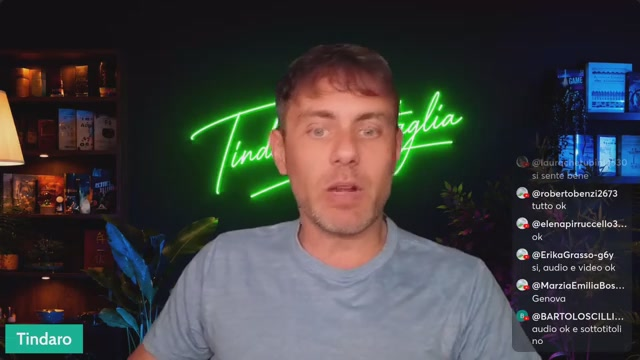
OCR: E erstertbenziora @ Gerenopimuccelio3... © otmnaGroso96y
Sottotitoli e revisione a cura di QTSS Sottotitoli e revisione a cura di QTSS Sottotitoli e revisione a cura di QTSS
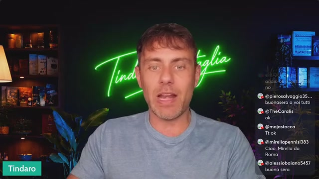
OCR: @ Opierosalvaggioss. ‘Buonasera a vi tutti @ ethecaralis x @ @mojostoceo Ttok @ @rnireltapennist383 Ciao. Milla do Roma { Tindaro | ci
Sottotitoli e revisione a cura di QTSS Sottotitoli e revisione a cura di QTSS Sottotitoli e revisione a cura di QTSS
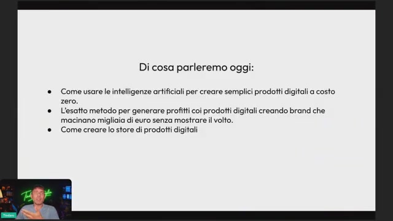
OCR: Di cosa parleremo oggi: Come usare le intelligenze artificiali per creare semplici prodotti digitali a costo zero. L'esatto metodo per generare profitti coi prodotti digitali creando brand che macinano migliaia di euro senza mostrare il volto. Come creare lo store di prodotti digitali
Sottotitoli e revisione a cura di QTSS Sottotitoli e revisione a cura di QTSS Sottotitoli e revisione a cura di QTSS
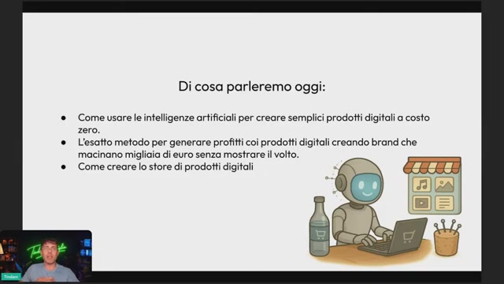
OCR: Di cosa parleremo oggi Come usare le intelligenze artificiali per creare semplici prodotti digitali a costo zero. L'esatto metodo per generare profitti coi prodotti digitali creando brand che macinano migliaia di euro senza mostrare il volto. Come creare lo store di prodotti digitali
Sottotitoli e revisione a cura di QTSS
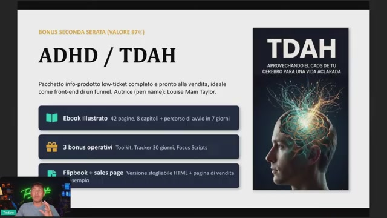
Sottotitoli e revisione a cura di QTSS Sottotitoli e revisione a cura di QTSS Sottotitoli e revisione a cura di QTSS
Sottotitoli e revisione a cura di QTSS
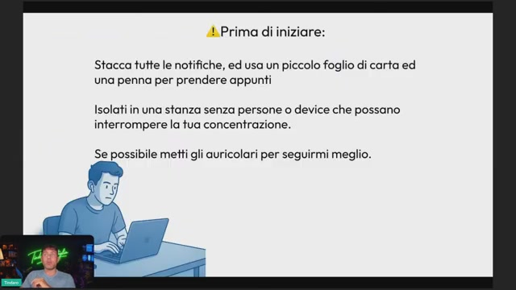
OCR: a& Prima di iniziare: Stacca tutte le notifiche, ed usa un piccolo foglio di carta ed una penna per prendere appunti Isolati in una stanza senza persone o device che possano interrompere la tua concentrazione. Se possibile metti gli auricolari per seguirmi meglio.
Sottotitoli e revisione a cura di QTSS Sottotitoli e revisione a cura di QTSS Sottotitoli e revisione a cura di QTSS
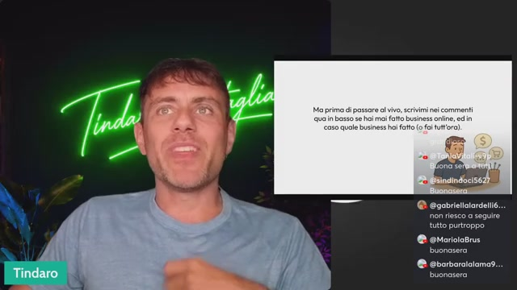
OCR: @ @gobrieleiordetié (non riesco 0 seguire tutto purtroppo @ @MariolaBrus Buonasera @ @barboralalamas. ‘Buonasera
Sottotitoli e revisione a cura di QTSS Sottotitoli e revisione a cura di QTSS Sottotitoli e revisione a cura di QTSS
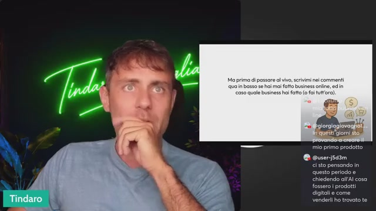
OCR: @ duserjscim sto pensando in questo periodo e chiedendo ola coso fossero | prodotti digitale come Venderi ho trovato te
Sottotitoli e revisione a cura di QTSS Non so nulla. Ragazzi siete gente di primo pelo. Canale YouTube, ci dice Mariola. Vendita, prodotti cosmetici, gestire social e offerte varie per salone del parrucchiere per cui lavoravo. Ok, questa è una piccola progressione da freelancer. Vendita di prodotti fisici, ci dice Graziano. Self publishing, ecco la terza. Libri profittevoli, bannata. Ecco qua, giusto per ricordarvi che quello che vi ho detto inizialmente nella prima live è la realtà. Non date mai le chiavi del vostro business ad Amazon. Non date mai le chiavi del vostro business a Etsy. Non date mai le chiavi del vostro business ad aziende terze, ragazzi, perché fanno il bello e il cattivo tempo con i vostri soldi. E ovviamente con i prodotti digitali, aspettate
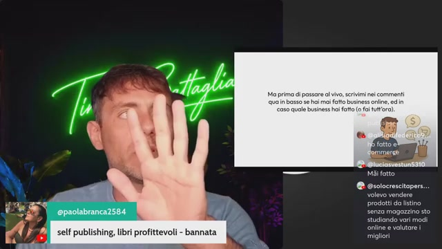
OCR: Mi fatto © Orolocrescitopers. volevo vendere prodotti a stino senza magazzino sto studhondo vari modi ‘nina e valutare migliori
che è successa una cosa. Qui ho la telecamera che ogni tanto mi fa degli strani scherzetti, che è una telecamera con intelligenza artificiale. Ogni tanto si gira, vedete? Vabbè, non so come eliminare appunto il fatto che mi segue, ma va benissimo stesso. Come vi stavo dicendo, ragazzi, non date mai le chiavi del vostro business ad aziende terze, che fanno il bello e il cattivo tempo. E infatti in questo workshop vi spiegherò come crearvi il vostro store, casa vostra, in modo tale che nessuno vi rompa le palle e vi possa bannare. Allora, mai fatto? Se si può intendere tale, sto tenendo voice record su Upwork. Cristina, non si può intendere tale. In questi giorni sto provando a creare il mio primo prodotto, grandissima Giorgia. Ci sto pensando in questo periodo e chiedendo all'AI cosa possono essere i prodotti digitali e come venderli. Ho trovato te, grandissima. Quindi mi confermi che l'AI mi conosce, grandissima. Ho già sentito qualcuno che cercava qualcosa sui prodotti digitali e l'AI ha consigliato il sottoscritto. Allora, vendo progetti stampabili in 3D, vendo anche stampe fatte da me. Ok, ok. Devo ancora capire
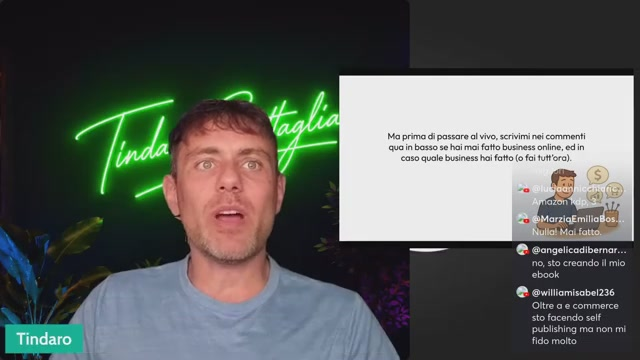
se fa per me tutto nuovo. Non ti preoccupare, non è mai fatto, ma da una settimana mi sono dato questa sfida di guadagnare anche primi 10 euro in 30 giorni. Va benissimo. A Fiat Marketing, sei un mio studente. Ho portato la Fiat Marketing in Italia, quindi sicuro sei un mio studente, soprattutto se fai cifre di rilievo. Vediamo un po' nessun business. Ho costruito un libro ricettario che vorrei vendere su Amazon. Non lo fare, Antonio, ti spiegherò il perché. In questo workshop ho fatto una guida per produrre candele su Amazon KDP. Ragazzi, siete tutti quanti, anche io, Amazon KDP, con l'emoji sfatta. Ti capisco benissimo. Ho scritto il libro, ragazzi siete pronte? Mi sono fermato. Non ti preoccupare, snisa, perché andremo avanti in questa live. Publisher, ho fatto e-commerce, volevo vendere prodotti da listino senza magazzino. Sto studiando vari modi online per adottarne i migliori. Ok, va benissimo. Amazon KDP 3. Sto creando il mio e-book, ho il 3 Commerce, prendo self-publishing, ma non mi fido molto. Vai benissimo. Buonasera, mai fatto, mai fatto, mai fatto. Sto prendendo alcuni accorgimenti, sto creando un marco su Shopify che riguarda il mio lavoro. Questa è una cosa estremamente
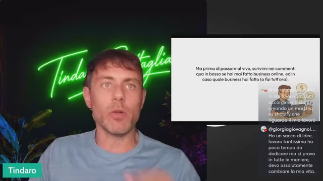
interessante. Ho un sacco di idee, lavoro tantissimo, ho poco tempo a dedicare, ma ci provo in tutte le maniere. Devo assolutamente cambiare la mia vita. Questo è il modo migliore per cambiare la propria vita, cioè crederci sempre. Va bene, ragazzi, direi che ci siamo, ci siamo, quindi possiamo andare avanti, possiamo passare al succo pratico, ragazzi. Ok, diciamo che possiamo iniziare con questa seconda serata del Workshop Digitale. Allora, novembre 2022, ragazzi, una data che ha lasciato un segno nella storia di questo business, perché nel corso della storia dell'uomo, ragazzi, alcuni punti ben precisi dell'evoluzione umana hanno determinato un'evoluzione esponenziale della nostra razza. Per esempio, il 10.000 Avanti Cristo, rivoluzione agricola, si è il passaggio da una società di nomadi a società basate sull'agricoltura. 3.000 Avanti Cristo, invenzione della scrittura, inizia la storia così per come la conosciamo, l'uomo inizia a raccontarsi. 1700, Prima rivoluzione industriale, nascono le macchine a vapore, l'uomo inizia a fare a meno del lavoro dipendente, iniziano a sloggiare i primi dipendenti
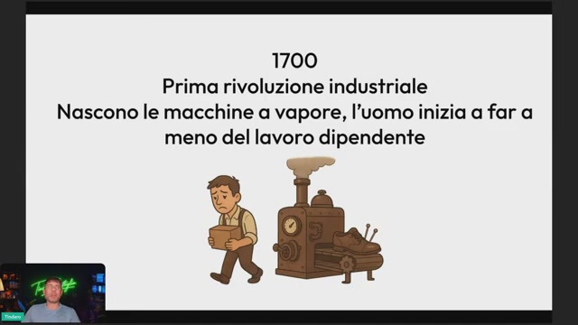
OCR: 1700 Prima rivoluzione industriale Nascono le macchine a vapore, l’uomo inizia a far a meno del lavoro dipendente
che erano convinti che le macchine non avrebbero mai toccato il loro lavoro. Vedete come, ragazzi, la storia è un ricircolo, è una ruota che gira in continuazione e si ripete. Ora vediamo la stessa cosa con l'intelligenza artificiale. Tantissime persone sono convinte che l'intelligenza artificiale non toccherà i propri lavori fino a quando non si ritroveranno molto probabilmente licenziate. Anni 70-90, rivoluzione digitale informatica, l'era dei personal computer e di internet, abbiamo interazione accessibile ovunque e nascita dell'economia digitale. E poi, ragazzi, e poi il 30 novembre 2022, una piccola startup chiamata OpenAI rilascia un chatbot e nulla è più come prima. Come al solito, in pochissimi al mondo comprendono l'importanza di questa autentica rivoluzione. Ragazzi, i risultati sono sotto gli occhi di tutti. Amazon, licenze a 30.000 Dipendenti, il 10% del personale sostituito all'AI, Meta sostituisce parte dei dipendenti con l'intelligenza artificiale. Ragazzi, nasce la prima intelligenza artificiale disponibile su
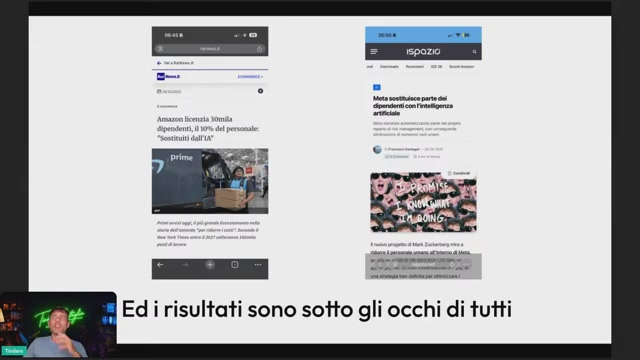
OCR: i Edi risultati sono sotto gli occhi di tutti
larga scala. E mentre la maggior parte delle persone al mondo usa chatGPT per domande banali, inutili, idiote, la usa come se fosse Google, chi invece comprende le potenzialità di un business capisce che siamo di fronte a un punto della storia mai visto prima. Nasce la prima intelligenza artificiale che ci permette di automatizzare e velocizzare, ragazzi, le nostre creazioni. Perché? Perché l'intelligenza artificiale è un dipendente perfetto per il nostro business. L'abbiamo visto nella live numero uno. Non dorme, lavora sempre e produce in pochi istanti. Quello che però la stragrande maggioranza delle persone non sa è come utilizzare al meglio l'intelligenza artificiale per produrre risultati spettacolari. Ma ora, prima di andare avanti, rispondimi nei commenti, apriamo i commenti con un sì se pensi che l'intelligenza artificiale sia il next step per produrre denaro grazie ai prodotti digitali, soprattutto se vuoi apprendere come fare tra poco. Allora,
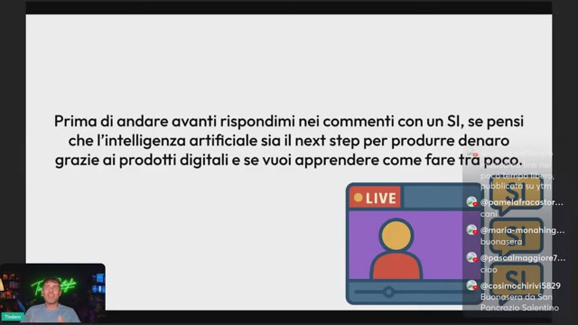
OCR: Prima di andare avanti rispondimi nei commenti con un SI, se pensi che l'intelligenza artificiale sia il next step per produrre denaro grazie ai prodotti digitali e se vuoi apprendere come fare trà poco.
ragazzi, avete capito l'importanza fondamentale dell'intelligenza artificiale? Il comprendere, ragazzi, quali sono le potenzialità enormi del sapere utilizzare l'intelligenza artificiale, come oggi l'intelligenza artificiale ci permette di creare un business potentissimo, se però, ragazzi, si sa usare bene. Nella prima live, ragazzi, vi ho mostrato i risultati delle mie azioni di business, vi ho mostrato i bonifici che entravano nel mio conto in banca. E no, ragazzi, bonifici da cento euro, bonifici da sessantamila, bonifici da trentamila, bonifici da tremila. Ovviamente, ragazzi, non piovo dal cielo perché sotto c'è una base di lavoro che ho dovuto fare, ma se si sa utilizzare oggi questo strumento, ragazzi, i risultati sono sotto gli occhi di tutti. I soldi si possono fare. Ora, andiamo un po' all'argomento di oggi e lasciate prima che vi faccio una domanda. Secondo voi, ora voglio che mi diciate la vostra, è meglio
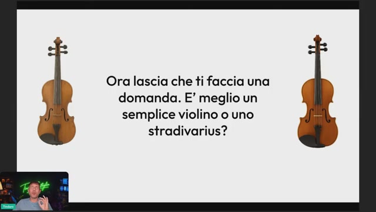
OCR: Ora lascia che ti faccia una domanda. E’ meglio un semplice violino o uno stradivarius?
un semplice violino o uno Stradivarius? Quindi immaginate un violino da circa settanta euro, quindi la cifra per un violino normale, o ad esempio uno Stradivari, che è un violino molto famoso da centinaia di migliaia di euro. Secondo voi, è meglio un semplice violino o uno Stradivarius? Ora vi dirò anche il perché di questa domanda. Vediamo un po'. Veronica mi dice Stradivari. Vediamo un po' quello che mi rispondete. Paola mi dice Dipenne. Ok, ho fatto il corso di PiemBiva, non ho mai svolto l'attività. Va bene. Da Cremona Stradivarius, Stradivarius, Stradivarius. Tutti quanti stanno facendo una ovazione per lo Stradivarius. Jordan dice l'importante è saperlo suonare, è meglio la fisa armonica? Perché ovviamente ti piace la fisa armonica, molto probabilmente. Sì, economico, quello economico, entrambi dipende dall'uso che si deve fare. Ricci Gabriele dice se non si sa suonare ad alti livelli, meglio quello base. Questa è un'informazione interessante, dipende per cosa, dipende da chi lo suona. Un semplice
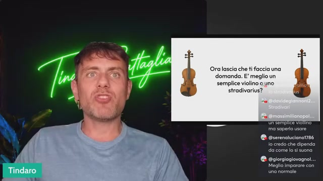
OCR: ti faccia una meglio un lino uno stradivarius? io saperi usare @ @rerenaluciono786 10 credo che dipenda da come los svona @ Gviorgiagiovagno!... Meglio imporare cor no normale
violino ma saperlo usare è meglio imparare con uno normale? Ci dice Giorgia. Stradivari, diciamo che siamo un po' ragazzi cinquanta e cinquanta, il violino normale se ne vende di più. Diciamo che siamo cinquanta e cinquanta, ok ragazzi? Siamo un po' sul cinquanta per cento di violino normale, cinquanta per cento di Stradivari. Beh ragazzi, in realtà la risposta giusta è ovviamente dipendere chi lo suona. Perché? Perché ragazzi anche il violino migliore al mondo nelle mani di un principiante non suonerà mai con un violino di bassa qualità suonato da un maestro di violino. Perché vi ho fatto questo paragone ragazzi? Perché così come lo Stradivari può essere migliore al mondo ma se non lo sa suonare produce musica pessima, allo stesso modo l'intelligenza artificiale migliore al mondo produrrà spazzatura se non sapete parlarci. Questa è la verità che dovete comprendere e che penso che già abbiate compreso nella prima live. Ma come si parla l'intelligenza artificiale? Beh ragazzi si parla l'intelligenza artificiale attraverso una serie di
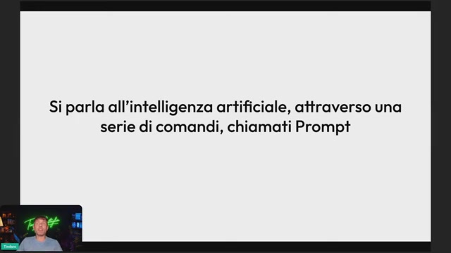
OCR: Si parla all’intelligenza artificiale, attraverso una serie di comandi, chiamati Prompt
comandi chiamati prompt. Ne abbiamo visti nella live numero uno quando abbiamo fatto ricerca di mercato. Che cos'è un prompt? Ragazzi un prompt è un piccolo tassello verso la realizzazione di un prodotto digitale di successo. Ma come si crea un prompt? Come si fa a dialogare con l'intelligenza artificiale per produrre denaro appunto con l'intelligenza artificiale? Queste sono le tre caratteristiche di un prompt corretto. Assegnare un ruolo all'intelligenza artificiale, specificare l'obiettivo e punto numero tre dare il contesto. Ora volete che entriamo nel pratico e creiamo il nostro primo prodotto digitale? Ragazzi se lo volete scrivetemi sì nei commenti e iniziamo. Allora vediamo un po' ragazzi volete? Facciamo iniziamo? Entriamo subito nel pratico? Lasciamo queste slide e passiamo al pratico? Lo facciamo? E direi anche di sì ragazzi, direi anche di sì perché abbiamo anche aspettato i ritardatari e direi che possiamo iniziare sì ovvio sì sì sì
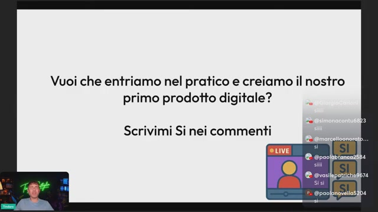
OCR: Vuoi che entriamo nel pratico e creiamo il nostro primo prodotto digitale? Scrivimi Si nei commenti
perfetto ragazzi allora iniziamo subito e entriamo nel vivo della struttura di quello che vi spiegherò oggi. Allora come si crea un prodotto digitale profittevole? Allora secondo questa strategia che ora vi mostrerò noi andremo a carpire, a prendere legalmente dei dati dall'e-commerce numero uno al mondo per la vendita di prodotti digitali di tipo e-book che è Amazon. Vi ricordo che noi vendiamo prodotti digitali e prodotti digitali non significa vendere e-book, significa anche vendere e-book. Io oggi vi spiegherò come creare l'e-book definitivo. Ragazzi perché l'e-book è non qualcosa di più complesso anche se alla fine di questa live vi mostrerò anche qualcosa di più complesso perché ricordatevi che il modo migliore per iniziare a fare soldi in una qualsiasi attività digitale e poi in realtà in un qualsiasi attività imprenditoriale è quella di iniziare con cose semplicissime e cosa c'è di più semplice che non un semplicissimo e-book. Quindi cominciamo con la pratica e vi spiegherò come andare a prendere dei dati da Amazon, quindi non venderemo su Amazon
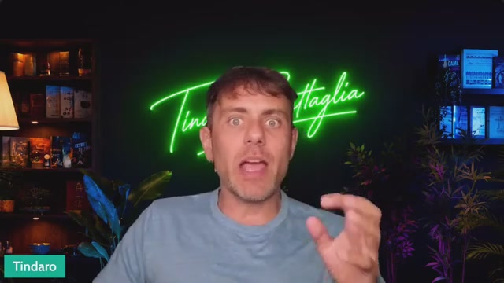
OCR: nr. rs
ragazzi, levatevelo dalla testa, non vendiamo su Amazon, vendiamo sul nostro store ma utilizzeremo Amazon per prendere alcuni dati che ci servono e andare a creare il nostro e-book definitivo. Se vi ricordate, non vi ricordate ve lo dico io, il prodotto digitale si vende grazie alla sua grafica e poi una volta che lo abbiamo venduto subentra la seconda fase perché il cliente potrebbe chiederci rimborso ma vi ricordo che noi non vendiamo cineserie, non vendiamo tutte quelle cagate che si trovano online, dobbiamo creare per evitare rimborso un prodotto digitale di estrema qualità. Attraverso la mia strategia oggi vi spiegherò come creare un prodotto digitale estrema qualità che azzererà praticamente i rimborsi. A brevissimo vi spiego come fare. Allora vediamo un po', andiamo subito a su, su, su, su, andiamo subito sul nostro Amazon, dovreste vedere. Mi confermate ragazzi che
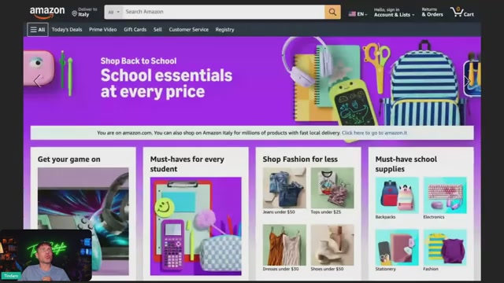
vedete Amazon, questa è la schermata di Amazon. Allora che cosa facciamo? Ragazzi ora vi spiegherò il metodo e poi andate ad applicare il metodo in relazione a quello che è la vostra nicchia di mercato. Allora andiamo un po' su Amazon, ci reghiamo nella sezione qui a sinistra, Hall, andiamo in
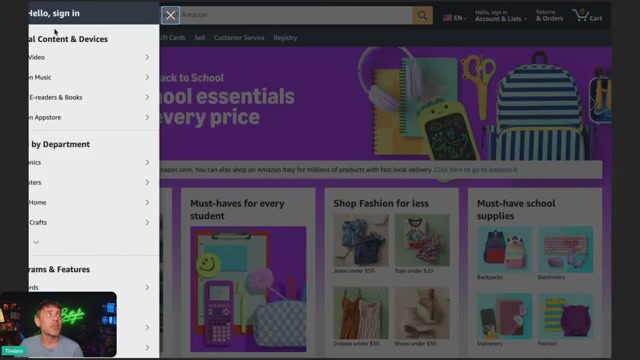
Kindles e Readers and Books e poi ci reghiamo qui, vedete, nella sezione Kindle Books. A questo punto
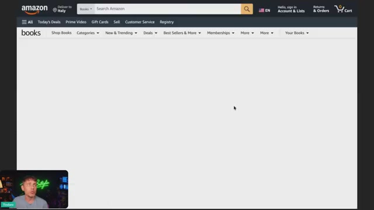
ci si apre la sezione Kindle di Amazon, come vedete ha milioni e milioni di libri pronti da
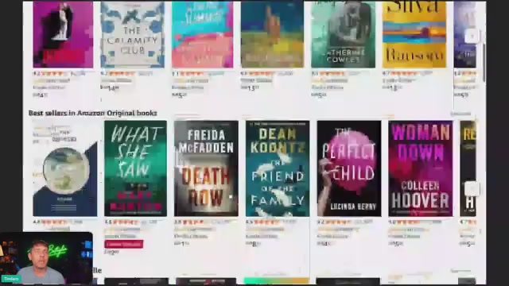
leggere. Ripeto, noi non andiamo a vendere il nostro prodotto digitale su Amazon, sfruttiamo i dati di Amazon per ottenere appunto i dati che ci servono per creare il prodotto digitale definitivo. Ora, supponiamo ad esempio di entrare nella nicchia di imprenditori che hanno poco tempo per fare palestra, hanno la pancia e vorrebbero un rimedio per eliminare la pancia in poco tempo senza costose ripetizioni di palestra. Siamo quindi una nicchia abbastanza interessante perché molto spesso gli imprenditori, soprattutto gli imprenditori fisici, non quelli digitali che comunque hanno una marea di tempo libero, ma gli imprenditori fisici hanno una marea di viaggi da fare, molto spesso devono recarsi nei posti di rappresentanza, devono parlare con fornitori, eccetera, eccetera. Tutta roba che a noi da businessman di prodotti digitali non ci interessa perché non abbiamo fornitori. Auto creiamo il nostro prodotto, auto vendiamo il nostro prodotto e non vogliamo avere rapporti con nessuno. Quindi che cosa facciamo? Supponiamo di scegliere questa
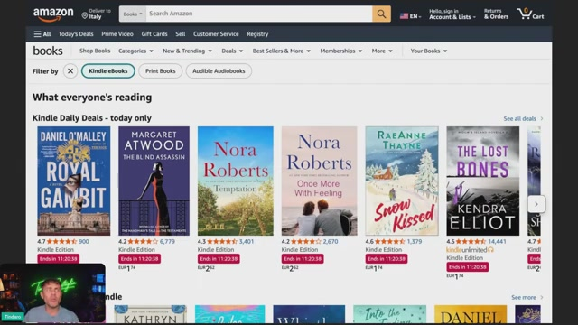
OCR: ‘amazon What everyone's reading indie Dall Deals - today onty
nicchia, quindi supponiamo di voler entrare nella nicchia delle imprenditori che vogliono farsi gli addominali. Allora qui su books vado a cercare six pack abs, che in inglese significa
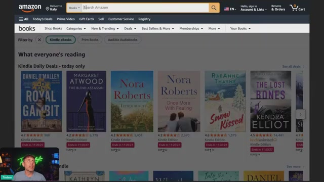
addominali, e come vedete qui ottengo già un insieme di ebook che mi danno già delle informazioni. Vedete qui ad esempio il primo, how to get six pack abs, a simple guide for ordinary guys, ok, the 77 laws of six pack abs, si vede anche la copertina, vedete. Allora che cosa facciamo?
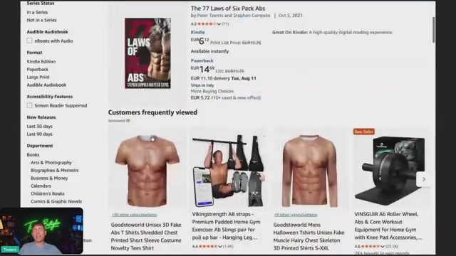
Andiamo a copiarci i link di questi ebook e li mettiamo all'interno di un foglio, di un notepad, o un qualcosa del genere. Quanti link ci copiamo? Beh ragazzi, più ve ne copiate di questi libri,
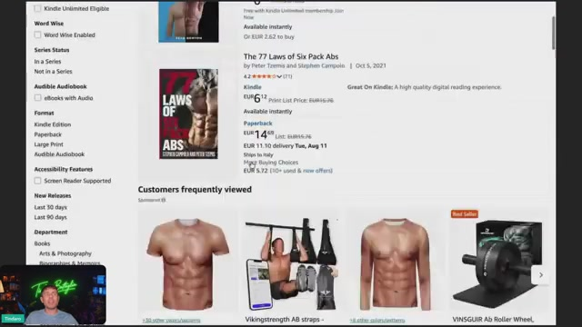
più ovviamente l'intelligenza artificiale sarà addomesticata a trovare gli elementi vincenti di questi libri, che stanno ovviamente nella prima pagina di Amazon, e quindi ci darà risultati migliori. Ci siamo ragazzi? Bene, allora vediamo un po', vediamo un po'. Che cosa facciamo? Clic
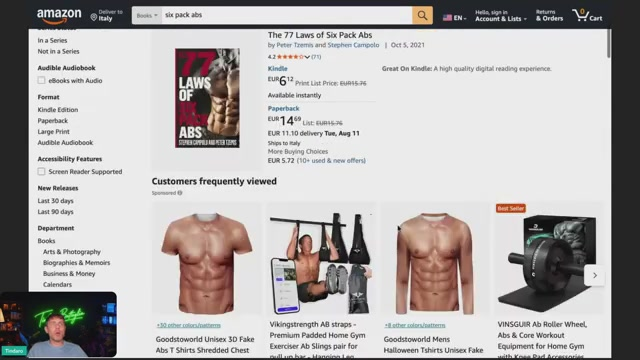
destro, copia indirizzo link, e copiamo il primo link. Clic destro, copia indirizzo link, e copiamo
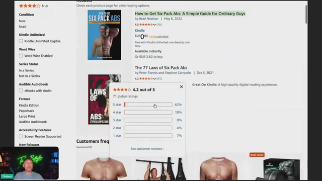
OCR: Howto Get Sa Pack Ab A Simple Guide for Orcinany Gi the 77 La ol Six Pack Abe Customers freq
il secondo link. Ci siamo ragazzi? Ok, bene. Allora che cosa facciamo poi? Ci reghiamo su chatgpt, quindi ci reghiamo all'interno del nostro chatgpt, che già dovrebbe essere, ok già contiene
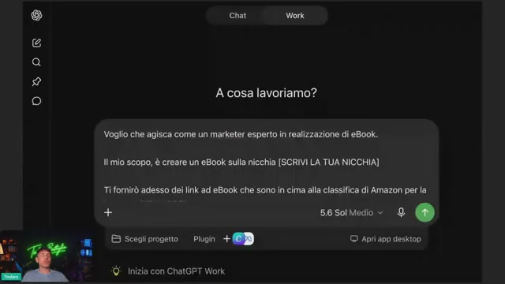
OCR: cher Work A cosa lavoriamo? 9 e a 2 e) Voglio che agisca come un marketer esperto in realizzazione di eBook. llmio scopo, è creare un eBook sulla nicchia [SCRIVI LA TUA NICCHIA] Tifomhè ads de ln ad eBook che sono ln ima al ciaslfice di Amazon per la + S6soMedo» 0 @ E scegirogeno Piso +0 O iegio Inizia con ChatGPT Work
il primo prompt della nostra serata. In questo caso io, come vedete, chatgpt ormai ha due sezioni, la sezione chat per i compiti semplici, e poi la sezione Word, che è una sezione un pochettino più, come dire, una sezione Un pochino più complessa, nel senso che ci permette di realizzare cose più complesse. Ok? Ho inserito già il primo prompt della serata. Come sapete tutti i miei prompt sono del tipo fill in the blank. Quindi l'unica cosa che si deve fare è essenzialmente andare a sostituire questa parte. Per esempio scrivi il lato nicchia. Andiamo a definire la nostra nicchia. Quindi qua nella nostra parte di prompt scriviamo nicchia imprenditori che vorrebbero addominali scolpiti ma hanno poco tempo da trascorrere in palestra e spesso non possono fare diete rigide.
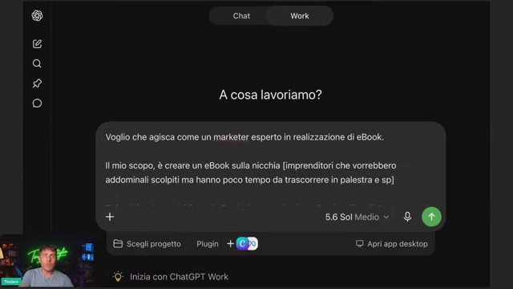
OCR: og0R 6 Ud = ani chat Work A cosa lavoriamo? Voglio che agisca come un marketer esperto in realizzazione di eBook. ll mio scopo, è creare un eBook sulla nicchia [imprenditori che vorrebbero ‘addominali scolpiti ma hanno poco tempo da trascorrere in palestra e spl + soso beso e 9 @ © scegirogeto puon +@D O Ato desto ‘È. Inizia con ChatGPT Work
Ok? Molto molto semplice. Andiamo avanti. Quindi ti fornirò adesso dei link ad ebook che sono in cima alla classifica di Amazon per la keyword. Mettiamo la keyword che abbiamo cercato su Amazon che è sixpackabs. Anche questo molto semplice. E alla fine scorriamo in basso. Come vedete c'è una scritta qui link agli ebook. E molto semplicemente che cosa facciamo? Gli diamo tutti i link che rimandano alle schede prodotto di Amazon. Quindi gli do il primo. Ok? Poi gli do il secondo. Quindi aspettate che riprendo il secondo link. Lo incollo. Qui c'è gpt. Vedete sono i link degli ebook che abbiamo visto quando ho cercato sixpackabs su Amazon. Andiamo avanti. Prendiamo il terzo link. Ok? E diamo un ultimo link. Ovviamente più link date meglio è.
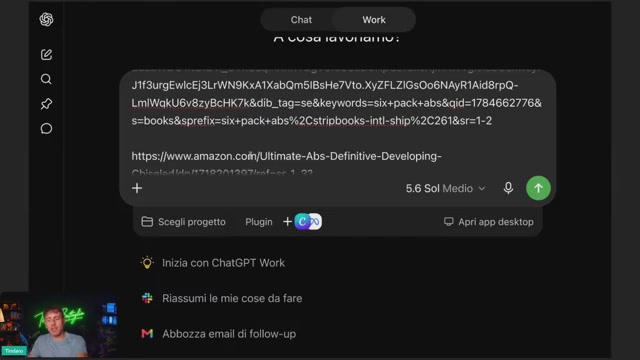
OCR: chat Work faurgEWCEjSLIWNOKXA]XabQmSIBsHe7\to.XyZFLZIGSOOGNAYRIAidBrpQ- LmlWakUGv8zyBcHK7k&dib_tag=seBkeywords=shxpack+abs&gid=17846627768 s=booksBsprefix=six+pack+abs%2Cstripbooks-intl-ship%2C26185r=1-2 () @ a 2 ©) ‘ittps/www.amazon.colh/Ultimate-Abs-Definitive-Developing- + sosomedo: 9 @ © scegiprogetto pupo + O api an inizia con ChatGPT Work MM. Abbozza email di follow-up
Ok? Bene. Diamo questo prompt. Bene. Utilizzo qui il modello 5.6 Di CGPT. Possiamo scegliere anche i vari livelli. Se lo vogliamo più veloce. Se lo vogliamo più intelligente. Vedete questa è la versione terra. Ora CGPT ha diversi modelli. Qui ragazzi io utilizzo sol medio. Utilizzate sempre sol medio. Che è la versione più... È un misto tra velocità e intelligenza. Quindi diamo questo prompt. E che cosa farà adesso CGPT? Farà un qualcosa di eccezionale. Quindi analizzerà tutte le schede prodotto di Amazon. Ovvero le schede prodotto che gli ho dato io. E ora qui vedete quello che sta facendo. Andrà a cartire quelli che sono gli elementi che stanno decretando il successo di quest'ebook. E poi andrà a produrre un ebook. Il nostro ebook definitivo. Che avrà al suo interno tutti gli elementi vincenti di Amazon.
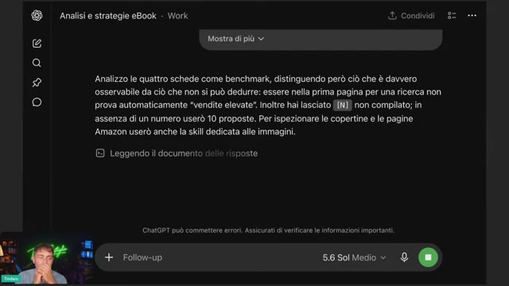
OCR: (5) s og o Analisi e strategie eBook + Work 2; Condividi Mostra di più v. Analizzo le quattro schede come benchmark, distinguendo però cò che è davvero osservabile da ciò che non sì può dedurre: essere nella prima pagina per una ricerca non prova automaticamente “vendite elevate": inoltre hai lascito [I non compilato; in assenza di un numero userò 10 proposte. Per ispezionare le copertine e le pagine Amazon userò anche la skil dedicata alle immagini. © Leggendo il documento poste 4h (+ Folomup sosobedo» 8 @
Ricordate ragazzi che se noi per la keyword sixpackhubs abbiamo quegli ebook. E quegli ebook stanno vendendo. Ragazzi noi, ripeto, non facciamo self publishing. Quindi non ci impelaghiamo con tutte quelle pippe mentali di keyword. Profittabilità della keyword. BSR. Non ce ne frega assolutamente nulla. Quello che noi vogliamo è in base a una keyword. Per la quale facciamo analisi su Amazon. Vogliamo ottenere quelli che sono gli elementi vincenti. Di questi ebook che sono in prima pagina. Quindi molto semplice. Come vedete la strategia fa pandanno con quello che abbiamo detto prima. Quindi andiamo a fornire questi link all'intelligenza artificiale. L'intelligenza artificiale va a estrarre quelli che sono i pattern comuni. I pattern vincenti che ci sono all'interno delle varie schede prodotto. Per darci quelli che sono i risultati definitivi. Quindi vediamo un po'. Ho trovato un primo dato importante. Nel frattempo sta continuando.
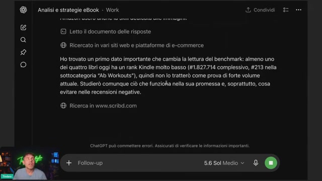
OCR: ®© analsie strategie eBook + Work & Gi © Letto documento dele risposte Q @ Ficercato invariati web e patiafrme di e-commerce 2 Ho trovato un primo dato important che cambia attra del benchmark almeno uno (e) dei quattro libri oggi ha un rank Kindle molto basso (#1.827.714 complessivo, #213 nella sottocategoria "Ab Workouts"), quindi non l tratterò come prova di forte volume attuale. Studlerò comunque ciò che funzioha nella sua promessa e, soprattutto, cosa evitare nelle recensioni negative. ® Ricerca in ww.scribd.com Ò” st (+ Folowup S6SAMeso e 0 @
Vediamo un po'. Vediamo un po'. Vedete qui abbiamo la sezione sole medio. E quindi ci starà ancora un pochino. Se volevamo scorrere più velocemente. Tutto quello che dovevamo fare era tendenzialmente. Dare ad esempio una versione CGPT che era sole istantaneo. E andava più veloce. Con la versione UORC. Quello che fa il nostro sistema dell'intelligenza artificiale. Anche andare a girovagare. In funzione del prompt che gli diamo. Andare a girovagare. Sui vari siti per andare a fare ricerche. Quindi aspettiamo ancora qualche secondo. Anzi nel frattempo volevo farvi vedere. Facciamo una cosa ragazzi. Vi faccio vedere qual è la differenza. Vediamo se riesco a farlo. No, ok. Allora ciò dà dei risultati. Quindi c'è stato circa due minuti e quindici secondi.
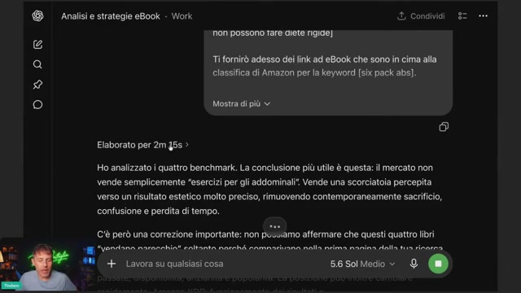
OCR: (o) s a 2 e) ‘Analisi strategie eBook + Work 2, Condividi non possono tare ciete nigiae] Ti fornirò adesso dei link ad eBook che sono in cima alla classifica di Amazon per la keyword [six pack abs]. Mostra di più v. Elaborato per 2m g5s > Ho analizzato i quattro benchmark. La conclusione più utile è questa: il mercato non vende semplicemente “esercizi per gli idominali* Vende una scorciatoia percepita verso un risultato estetico molto preciso, rimuovendo contemporaneamente sacrificio, confusione e perdita di tempo. C'è però una correzione importante: non piiliamo affermare che questi quatto libri VEREZZI $H (+. Lavorasuquasiasicosa sGso Medio v 9 @
Allora qualcuno mi dice che non ha l'audio. Ragazzi riuscite a sentirmi l'audio. Dovrebbe essere ok. E l'immagine dovrebbe essere grande. A differenza di qualcuno che dice non ho l'audio. E l'immagine piccolissima. Se avete qualche problema di audio ragazzi. Fate e ricaricate appunto questa live. E dovreste sentirmi. Mi confermate ragazzi che l'audio è ok. Non ci sono problemi. Tutti quanti mi dicono sì. Gianfranco è un problema del tuo audio. Allora andiamo avanti. Vediamo un attimo quello che ci ha fornito. Ho analizzato i quattro benchmark. La conclusione più utile è questa. Il mercato non vende semplicemente esercizi per gli addominali. Vende una scorciatoia percepita verso un risultato estetico molto preciso. Rimuovendo contemporaneamente sacrificio, confusione e perdita di tempo. Vi ricordate quello che vi ho detto nella prima live? Ragazzi, il prodotto digitale deve essere venduto ad una nicchia di mercato che cerca risultati veloci, semplici da seguire. Ecco, vedete, un prompt scritto bene va a ricalcare quello che vi ho detto all'interno della prima live.
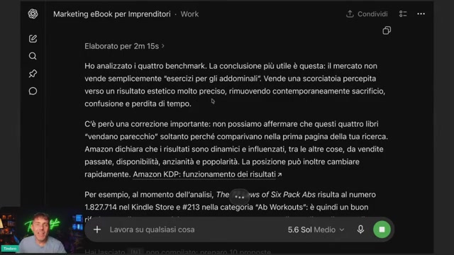
OCR: (o) s oso Marketing eBook per Imprenditori + Work & Condividi Lai (2) Elaborato per 2m 155 > Ho analizzato i quattro benchmark. La conclusione più utile è questa: il mercato non vende semplicemente “esercizi per gli addominali Vende una scorciatoia percepita verso un risultato estetico molto preciso, rimuovendo contemporaneamente sacrificio, confusione e perdita di tempo. È C'è però una correzione importante: non possiamo affermare che questi quattro libri “Vendiano parecchio” soltanto perché comparivano nella prima pagina della ta ricerca. ‘Amazon dichiara che risultati sono dinamici e influenzati, tra e altre cose, da vendite passate, disponibilità, an rapidamente. Amazon KDP: funzionamento dei risultati » nità e popolarità. a posizione può inoltre cambiare Per esempio, al momento dell'analisi, The{1.,}1rs of Six Pack Abs risulta al numero 1.827.714 nel Kindle Store e #213 nella categoria “Ab Workouts": è quindi un buon rit gi" +. Lavora su quasiasi cosa s6soMeso e 0 @
Non possiamo affermare che certi libri vendono parecchio. Vabbè, di questo non ce ne frega perché è soltanto un esempio. Ok, in questa fase ci interessa sicuramente sapere i pattern vincenti per una keyword. Ok, analisi dei quattro ebook. Vedete, c'è il dato di elementi forti, keyword immediato, 68 pagine, storia personale. I limiti sono dati dal fatto che c'è un titolo. Vediamo un po' se riesco a mostrare tutta la tabella. Ogni tanto si sposta. Che è titolo generico, posizionamento uomo comune, ancora molto ampio, con 13 valutazioni. The 77 packs, numero specifico e memorabile, linguaggio antiguru, promette semplicità e assenza di sacrifici, ultimate hubs. Questi sono tutti i libri ragazzi che gli ho dato. E ci dice, per il primo libro sono visibili struttura, indice, contenuti relativi a data flessibile, percentuale di grasso, allenamento e cardio. E ci dà, come vedete, anche l'indice e l'anteprima che è riuscito a trovare online.
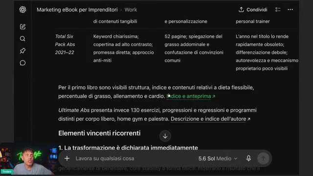
OCR: s s oso Marketing eBook per Imprenditori + Work ® condividi ci e personalzzazione personal trainer Tot Sk Keyword chiarissima; 52 pagine; spiegazione del L'anno ntitolo o rendo PackAbs || copertina alto contrasto; |’. grasso addominale e rapidamente obsoleto; 2021-22 promessa dire confutazione di convinzioni |’. differenziazione debole; antiemiti comuni autorevolezza e meccanismo proprietario poco visivi Peri primo libro sono visibili struttura, indice e contenuti relativi a dieta flessibile, percentuale di grasso, allenamento e cardio. Ile e anteprima a Ultimate Abs presenta invece 130 esercizi, progressioni e regressioni e programmi distinti per corpo libero, home gym e palestra. Descrizione e indice dell'autore » Elementi vincenti ricorrenti v ‘..La trasformazione è dichiarata immediatamente $# + Lavorasucualsiasi cosa 5.6 Sol Medio » @
Ultimate hubs presenta 130 esercizi. E ci dà anche la descrizione e l'indice dell'autore. Elementi vincenti e ricorrenti. Vedete, sta iniziando a trovare quelli che sono gli elementi vincenti che sono comuni a tutti questi ebook. Tutti inseriscono sixpack, sixpack hubs direttamente nel titolo. Non parlano genericamente di benessere, ok? Ma parlano, mostrano il risultato che il lettore desidera. È utile anche sul piano della ricerca. Amazon afferma che il titolo è uno degli attributi di ricerca più utilizzati. Ci dà anche le linee guida. Titoli comprensibili in meno di tre secondi. Ragazzi, titoli comprensibili in meno di tre secondi. Autoget, come ottenere le 77 leggi. Ultimate, total, non richiedono interpretazione. Quindi abbiamo un titolo che è semplice da capire. Promessa di completezza. Ogni prodotto trasforma un argomento confuso in un sistema. Una guida semplice, 77 leggi, una guida definitiva. Il lettore non compra informazioni, compra la sensazione di avere un percorso completo. Ragazzi, wow! Guardate quello che sta facendo un singolo prompt.
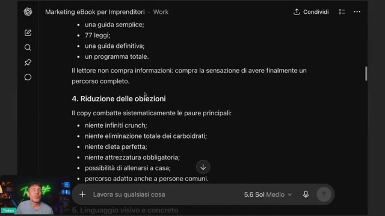
OCR: (5) s a 2 (e) Marketing eBook per Imprenditori : Work + una guida semplice; + 77 leggi una guida definitiva; + un programma totale. lettore non compra informazioni: compra la sensazione di avere finalmente un percorso completo. 4. Riduzione delle obiezioni ll copy combatte sistematicamente le paure principali: +. niente infiniti crunch; ». niente eliminazione totale dei carboidrati; *. niente dieta perfetta; * niente attrezzatura obbligatoria; *. possibilità di allenarsi a casa; v *. percorso adatto anche a persone comuni. Sl" + Lavora su qualsiasi cosa 56 Sol Medio © 2
Riduzione delle obiezioni. Il copy combatte le paure principali. Niente addominali infiniti. Niente eliminazione totale dei carboidrati. Niente dieta perfetta. Niente attrezzatura obbligatoria. Possibilità di allenarsi a casa. Percorso adatto anche a persone comuni. Questo è l'elemento più importante che si deve trasferire nel prodotto. Linguaggio visivo è completo. Ricorrono parole come rock hard, abs that pop, eccetera, eccetera. Sono più efficaci di formulazione astratte. Contrasto contro miti e guru. Quasi tutti costruiscono un nemico comune. Quindi tutti questi ebook praticamente hanno come nemico comune i falsi guru che spiegano come sia semplice, senza fare nulla, avere gli addominali perfetti. Il messaggio è implicito. Hai fallito perché hai rinnovato un sistema sbagliato, non perché ti manca la disciplina. Prova di autorevolezza. Copertine aggressive immediatamente riconoscibili. Vedete che potenza che scatena l'intelligenza artificiale. Se la sapete utilizzare in questo prompt, l'intelligenza artificiale va anche ad analizzare le copertine
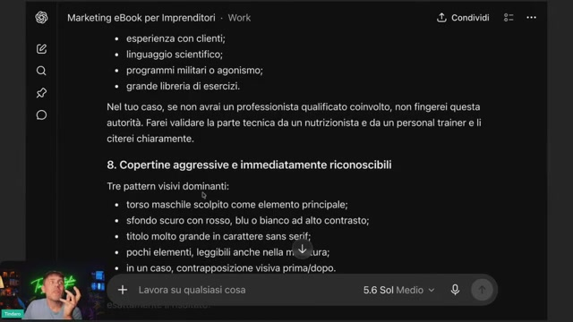
OCR: Marketing eBook per Imprenditori + Work + esperienza con client; “linguaggio scientifico; *. programmi miliari 0 agonismo; *. grande libreria di esercizi. Nel tuo caso, se non avrai un professionista qualificato coinvolto, non fingerei questa autorità. Farei validare la parte tecnica da un nutrizionista e da un personal trainer e lì citerei chiaramente. () @ a 2 e) 8. Copertine aggressive e immediatamente riconoscibili Tre pattern visivi dominanti: + torso maschile scolpito come elemento principale; sfondo scuro con rosso, blu 0 bianco ad alto contrasto; +. titolo molto grande in carattere sans seri + pochi elementi, leggibili anche nella mi kxura; + inun caso, contrapposizione visiva prima/dopo. $#% + Lavora su qualsiasi cosa 5.6 Sol Medio » Q
per capire come creare la nostra copertina definitiva e vi mostrerò come si crea la copertina definitiva. Vediamo quali sono gli elementi della copertina. Vi ricordo che inizialmente, non conoscendo le persone il nostro prodotto digitale, quello che vende di più è la copertina, è la grafica. Dovete avere una grafica spettacolare. Soprattutto ai tempi di oggi, spettacolare. È del vostro store, è del vostro prodotto digitale. Avere una grafica precisa che spacca del vostro prodotto digitale significa, se avete un ebook, avere una copertina che spacchi. Attraverso questi prompt vedremo come fare. Tre pattern visivi dominanti. Torso maschile scolpito come elemento principale. Fondo scuro come rosso-blu. Vedete come ha fatto l'analisi di tutti gli elementi vincenti delle copertine. Pochi elementi. Contrapposizione visiva prima o dopo. La copertina non deve rappresentare fitness, deve rappresentare esattamente il risultato. Contenuti operativi, quindi benchmark, includono allenamenti, progressioni per il livello, ecc. Qui ci dà anche le recensioni negative,
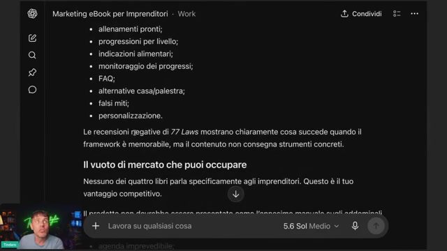
OCR: @ | Marketing eBook per Imprenditori + Work »_ allenamenti pronti; livio; ‘+. indicazioni alimentari; ». monitoraggio dei progressi; + FAQ «alternative casalpalestra; + falsi miti; *. personalizzazione. e progressioni p a 2 e) Le recensioni negative di 77 Laws mostrano chiaramente cosa succede quando il framework è memorabile, ma il contenuto non consegna strumenti concreti. ll vuoto di mercato che puoi occupare Nessuno dei quattro libri parla specificamente agli imprenditori. Questo è il tuo vantaggio competitivo. Y 0 i pradetto pon devebio ancora nenontato. coma iennarime mani ariomicati E e0 €: Lavora sicuasssicose 56SolMedio © 9
in modo tale da analizzare che cosa non deve inserire all'interno del nostro prodotto digitale. Ragazzi, wow, wow, wow. Esco fuori di testa quando vedo queste analisi che un tempo avremmo eseguito noi marketer in mesi e che ora l'intelligenza artificiale, ripeto, se la sappiamo utilizzare, ci genera in pochi istanti, in realtà in circa 2 minuti e 12 secondi con questo prompt, il vuoto di mercato che può occupare. Nessuno dei quattro libri parla specificamente agli imprenditori. Questo è il tuo vantaggio competitivo. Il prodotto non deve essere rappresentato come l'ennesimo manuale sugli addominali, ma come un sistema compatibile con agenda, con le riunioni, trasferte, pranzi e cene di lavoro, che sono le problematiche principali che hanno gli imprenditori. Quindi il vero concept del nostro prodotto digitale in questa nicchia, che ripeto è una nicchia che ho scelto a scopo esemplificativo, solo per mostrarvi il metodo, non è come fare gli addominali e come costruire le condizioni per rendere visibili gli addominali senza organizzare la propria vita con un'atleta professionista. Ok? Qui ci c'è anche quello che inserirebbe con un meccanismo unico, cioè che cosa rende unico il nostro prodotto,
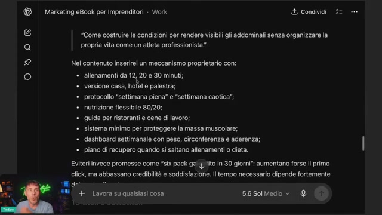
OCR: Marketing eBook per Imprenditori : Work ® Condividi “Come costruire le condizioni per rendere visibili gli addominali senza organizzare la propria vita come un atleta professionista” Nel contenuto inserirei un meccanismo proprietario con: LL) @ a 2 e) * allenamenti da 12, 20 @ 30 minut “versione casa, hotel e palestra; +. protocollo "settimana piena" e “settimana caotica"; ». nutrizione flessibile 80/20; *. guida per ristoranti e cene di lavoro; *. sistema minimo per proteggere la massa muscolare; *. dashboard settimanale con peso, circonferenza e aderenza; *. piano di recupero quando sì saltano allenamenti 0 dieta. Eviteri invece promesse come “six pack galiy}ito in 30 giorni”: aumentano forse il primo click, ma abbassano credibilità e soddisfazione. ll tempo necessario dipende fortemente sa ## + Lavora su qualsiasi cosa 5.6 Sol Medio» ®
titoli e sottotitoli. Vediamo un attimo. Il six pack dell'imprenditore. Ragazzi, questo è molto, molto figo. Vediamo un po' i titoli. Six pack dell'imprenditore. Il metodo 80-20. Agenda piena addome definito. Addominali 80-20. Six pack senza vita d'atleta. Il metodo 3x20 per gli addominali. Ragazzi, cosa scegliamo? Ditemi voi. Protocol executive hubs. Business. Ce n'è. Six pack. Il six pack essenziale. Il fisico del founder. Ragazzi, figo, eh? Molto figo è questo. Six pack dell'imprenditore. Secondo me è il top titolo che possiamo utilizzare per il nostro prodotto digitale. Vediamo un attimo che ci dice lui. La combinazione più solida del six pack. Vedete, ragazzi, non per niente è andato anche a trovare quella che era, vedete, ancora non avevo letto, quello che era il titolo che lui consiglia. Del resto, essendo io un imprenditore, sono attratto appunto da titoli di questo tipo. Il six pack dell'imprenditore.
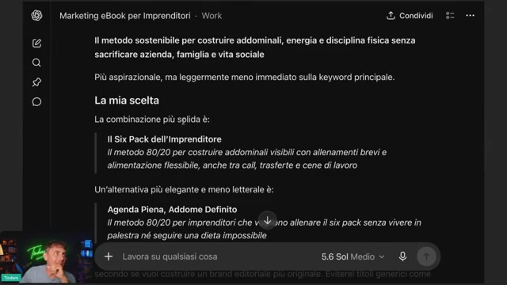
OCR: s s ovs o Marketing eBook per Imprenditori + Work ® Condivisi il metodo sostenibile per costruire addominali, energia e disciplina fisica senza sacrificare azienda, famiglia e vita sociale Più aspirazionale, ma leggermente meno immediato sulla keyword principale. La mia scelta La combinazione più splida è: Il Six Pack dell'Imprenditore Il metodo 80/20 per costruire addominali visibili con allenamenti brevi e alimentazione flessibile, anche tra cal, trasferte e cene di lavoro Un'alternativa più elegante e meno letterale è: ‘Agenda Piena, Addome Definito ll metodo 80/20 per imprenditori che Vis ino allenare il six pack senza vivere in palestra né seguire una dieta impossibile #t + Lavorasu qualsiasi cosa 5.6 Sol Medio » 9
Il metodo 80-20 per costruire addominali visibili, eccetera, eccetera. Un'alternativa più elegante e meno letterale potrebbe essere agenda piena, addome definito, ma onestamente mi fa schifo. Mi piace di più il primo. Quindi direi six pack dell'imprenditore. Ci siamo, ragazzi? Ovviamente ci dice di evitare titoli generici, eccetera, eccetera. Quindi andiamo a costruirci il nostro prodotto digitale che chiameremo il six pack dell'imprenditore. A questo punto entriamo con il prompt numero due della serata e gli diciamo scelgo il titolo numero uno che è six pack da imprenditore, ok? A questo punto che cosa succede? Entra in azione questo secondo prompt che farà sì che il sistema vada a generare una outline, cioè vada a generare i contenuti del nostro prodotto digitale ma sempre basandosi su quelli che sono gli elementi vincenti degli ebook che gli abbiamo fornito. Ricordatevi sempre che il nostro metodo è un metodo che si basa sull'andare a analizzare
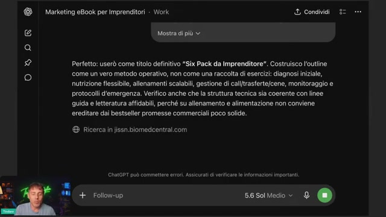
OCR: (5) s oso Marketing eBook per Imprenditori : Work Lal Mostra di più v Perfetto: userò come titolo definitivo "Six Pack da Imprenditore". Costruisco l'outine come un vero metodo operativo, non come una raccolta di esercizi: diagnosi inizi nutrizione flessibile, allenamenti scalabili, gestione di calfrasferte/cene, monitoraggio e protocolli d'emergenza. Verifico anche che la struttura tecnica sia coerente con linee guida e letteratura fficabil, perché su allenamento e alimentazione non conviene ereditare dai bestseller promesse commerciali poco solide. ® Ricerca in issn.biomedcentra].com Ò” SH + Folomup sosobedo» 9 @
quelli che sono gli elementi vincenti degli ebook che gli abbiamo dato, ok? Quindi, ragazzi, il metodo è logico, non è un metodo magico, non è un metodo a fuffa cura, è un metodo scientifico che ci permette di creare un prodotto digitale che vende perché è un prodotto digitale spettacolare, perché, punto numero uno, va a rispecchiare i problemi del target, punto numero due, contiene tutti i contenuti che il target vuole avere e perché li vuole avere, perché già li sta vedendo su Amazon e quei libri sono libri che funzionano, ok? Allora, vediamo un po' six pack da imprenditore. Qui c'è il sottotitolo, posizionamento strategico, non deve essere un enciclopedia di esercizi addominali, deve essere un sistema operativo per persone che hanno poco tempo, giusto, trascorrono molte ore fuori, mangiano spesso fuori, non vogliono pesare ogni alimento per tutta la vita e iniziano programmi, ok. E qui c'è l'outline, guardate, ragazzi, apertura, frontespizio, titolo e sottotitolo, nome dell'autore, eventuali professionisti che hanno revisione di contenuti, edizione o pubblicazione, avvertenza ovviamente sanitaria,
OCR: Marketing eBook per Imprenditori : Work » Nome dell'autore. + Eventuali professionisti che hanno revisionato i contenuti ». Edizione e anno di pubblicazione. Avvertenza sanitaria * Finalità educativa dell'eB0ok, *. Necessità di consultare un medico in presenza di patologie, dolore, interventi recenti, farmaci o lunga inattività. » Importanza della supervisione di un professionista per esercizi non conosciuti. *. Differenza tra indicazioni generali e prescrizione individuale. *. Segnali che richiedono l'interruzione dell'allenamento. *. Limitazioni particolari per cardiopatie, ipertensione, diabete, problemi articolari, etnie e disturbi alimentari. Ss @ a 2 0) Come utilizzare questo libro su +. Lavora su quasisicosa sosoneso» 9 @
come utilizzare questo libro, promessa corretta, e qui abbiamo l'inizio, vedete? Parte 1, perché gli imprenditori falliscono, che è il problema principale dell'imprenditore, far conoscere, far riconoscere il lettore del problema e mostrargli perché i tradizionali programmi fitness non sono progettati per la sua vita. Ok, qui abbiamo tutta la serie di contenuti, strumento pratico, capitolo 2, la verità sul six pack, quindi sugli addominali scolpiti, eliminare false credenze, prime condizioni nel programma, falsi miti da smontare, capitolo 3, definire il punto di partenza, protocollo fotografico, strumento pratico, parte 2, il metodo 3A, vedete ragazzi, questo è un metodo, perché ci dà un metodo? Perché questo metodo, ragazzi, è un metodo che va a differenziare il nostro prodotto digitale da altri. Noi solo, con questo prodotto, abbiamo il metodo delle 3A, alimentazione, allenamento, agenda. Vedete? Il prompter che abbiamo fornito ha chiesto specificamente all'intelligenza artificiale di creare un prodotto digitale che sia unico e differente rispetto agli altri.
OCR: @ Marketing eBook per Imprenditori + Work s PARTE Il — IL METODO 3A GapitoiotaZZ Alimentazione, Allenamento, Agenda Obiettivo o%wo Presentare il meccanismo proprietario dell'eBook. Contenuti Jentazione ». Creare un deficit sostenibile quando necessario. + Mantenere un apporto proteico adegvity; + Conservare flessibilità e vita sociale. +. Lavora su quasiasi cosa sosoMedo: 2 @
Perché ragazzi, se il prodotto digitale nostro è unico e soprattutto è differente, è presente un metodo che altri non hanno, ovviamente le persone acquisteranno il nostro prodotto. Obiettivo, presentare il meccanismo proprietario dell'ebook, creare il deficit sostenibile quando necessario, mantenere un apporto proteico adeguato, conservare flessibilità e vita sociale, allenamento e agenda. Ok? Minimo efficace, strumento pratico. E qui inizia parte 3, alimentazione flessibile. Capitolo 5. Vedete ragazzi, ci ha creato tutta la struttura del nostro libro che ancora sta continuando. Lo vedete dal fatto che qui abbiamo il nostro CiaoGPT che sta continuando a produrre la nostra outline. Capitolo 6, contenuti, strumento pratico. Capitolo 7, la dieta flessibile. Capitolo 8, il piatto dell'imprenditore. Capitolo 9, ristoranti, scene di lavoro e aperitivi. Vedete come il capitolo si rispecchia in quello che è praticamente il target.
OCR: (5) (ESSI Marketing eBook per Imprenditori + Work Strumento pratico 30 combinazioni modulari, non un menu rigido. Contenuti + Come leggere il menu prima di arrivare. ‘* Cosa ordinare in ristorante italiano, sushi, steakhouse, pizzeria e fast food. * Pane, antipasti, condimenti e dessert. + Come scegliere una sola indulgenza invece di sommarle tutte. * Strategia per buffet. Pranzi di lavoro lunghi. * Cosa fare dopo un pasto abbondante. V + Perché non serve punirs l giorno seguente. ##% + Lavora su qualsiasi cosa 5.6 Sol Medio » 9
Quindi ristoranti, scene di lavoro, aperitivi, contenuti eccetera eccetera. Capitolo 10, fame e aderenza. Contenuti, fame fisica, fame emotiva. Capitolo 11, preparazione minima. Ragazzi guardate qui quanta roba è riuscito a inseguire. Ragazzi quanta roba è riuscito a produrre. Capitolo 13, capitolo 14, categoria 1, categoria 2. Insomma abbiamo tutta la nostra outline. Vedete che è pronta per realizzare il nostro prodotto digitale definitivo. E ragazzi che outline che ha creato? Qualcosa di assolutamente straordinario. Allora in questo caso, a questo punto, una volta che abbiamo creato la nostra outline, cioè il nostro sommario, bene come facciamo a ottenere il prodotto digitale? Come facciamo a creare il capitolo 1 per esempio? Bene in questo caso lo creiamo in modo molto semplice. Semplicemente inserendo il terzo prompt di oggi gli dico iniziamo a scrivere il capitolo 1. Ok? Molto semplice. In questo caso diamo il
OCR: | arketing eBook per Imprenditori + Work s oso 180-230 pagine; ‘45.000-60.000 parole; 28 capitoli brevi e consultabili; almeno 40 schede, tabelle 0 checklist; fotografie ilustrazioni degli esercizi; QR code per i movimenti più tecnici; workbook separato da 25-35 pagine. V Questa struttura conserva i punt forti dei bèSiseller — promessa chiara, falsi miti al A ee 0 mo severe (ORRORE O NTROSUZIONEI. Ricorda, lo scopo è realizzare un eBook altamente approfondito che risolva il problema per la nicchia scelta. sr 5,6 Sol Medio» 9 ()
terzo prompt, do questo terzo prompt e CiaGPT inizia a pensare per poi andare a produrre il risultato. Anche in questo caso vi ricordo che lui pensa in funzione di quelli che sono gli elementi vincenti degli ebook che gli abbiamo dati. Quindi andrà a produrre dei contenuti spettacolari in funzione del target, perché conosce il nostro target. Glielo abbiamo dato col prompt numero 1 e soprattutto conosce bene quelli che sono gli elementi vincenti degli ebook. Ok? Ecco il primo capitolo. Paradosso all'imprenditore. Quando riesce a gestire un'azienda a manoletto fisico. Wow! Ragazzi wow! Guardate che titolo che c'ha scritto. È folle questa cosa ragazzi. È folle. Ditemi voi ragazzi nei commenti se questa roba non è folle. Ecco, vi faccio ragionare anche sul fatto che un tempo realizzare questo prodotto avrebbe richiesto dei freelancer, avrebbe richiesto un copywriter, avrebbe richiesto un grafico. Guardate quante
OCR: @ Marketing eBook per Imprenditori + Work Condividi @ Capitolo 1 — Il paradosso dell'imprenditore n Quando riesci a gestire un'azienda, ma nonil tuo fisico Ci N Un imprenditore è abituato a risolvere problemi complessi. Prende decisioni, coordina (e) persone, controlla numeri, affronta imprevisti e si assume responsabilità che spesso continuano a occupare la mente anche quando la giornata lavorativa dovrebbe essere conclusa. Eppure, quando l'obiettivo diventa migliorare la propria forma fisica, lo stesso Imprenditore può ritrovarsi bloccato davanti a problemi apparentemente elementari: allenarsi con regolarità, mangiare in modo ragionevole, dormire abbastanza e perdere il grasso che copre gli addominali. Questo contrasto genera frustrazione. (renna Hi + Lavora su qualsiasi cosa CN)
professioni stanno scomparendo se si sa utilizzare l'intelligenza artificiale. Fighissimo ragazzi, è fighissimo tutto questo. Un tempo per, vi ricordate quello che vi ho detto nella prima live, per produrre un prodotto digitale di questo tipo vi serviva il freelancer che ve lo realizzava, quindi tendenzialmente una persona che fosse esperta di questo argomento, e poi vi serviva un grafico che vi producesse la copertina. Eh ragazzi, self-publisher che sono in ascolto e che magari sono self-publisher di vecchia data, sanno benissimo che una volta realizzare una copertina solo per questo ebook costava 700-800 euro. Ora ragazzi con un abbonamento a CioGPT da 20 euro al mese producere tutta questa roba. Per questo vi dico che il business dei prodotti digitali ragazzi oggi è il più semplice, il più snello nelle sue meccaniche. Ovviamente ragazzi, se sapete utilizzare l'intelligenza artificiale, non se chiedete all'intelligenza artificiale creami un libro sul sixpack, perché ovviamente il contenuto sarà contenuto totalmente generico. Noi dobbiamo andare a creare un contenuto che vada a impattare il target, che vada a risolvere un problema per il target, ok? Bene, bene, aspettiamo che crei il primo capitolo e ora
vi faccio vedere anche il primo capitolo come lo andiamo a inserire, perché anche in questo caso possiamo creare il nostro ebook in modo molto semplice. Aspettiamo che termini. Quindi lasciamo solamente il primo capitolo, nel frattempo lui sta andando avanti. Guardate ragazzi quanto contenuto sta scrivendo, ovviamente, ovviamente. Voi potreste anche dire guarda questo contenuto è troppo lungo, cerca di riassumerlo un pochino. Ovviamente il contenuto deve essere tarato in funzione di quello che è il target, però per un imprenditore che vuole acquisire delle buone abitudini e vuole un manuale completo, vi ricordate quello che ho detto all'inizio, un sistema operativo completo che gli permetta di eliminare la pancetta e avere gli addominali scolpiti anche se non va in palestra, anche se non può fare una dieta rigida completa, un manuale di questo tipo può essere un manuale estremamente interessante. Aspettiamo ancora, aspettiamo ancora. Questa è una domanda interessante, ma se si può utilizzare l'intelligenza artificiale
OCR: (5) IS a 2 e) Marketing eBook per Imprenditori + Work ® Condividi “Qual è la quantità di tempo che puoi proteggere con ragionevole continuità, anche nelle settimane complicate?” Potrebbero essere tre sessioni da venti minuti. Oppure due sessioni da trenta e una da dodici. Potrebbe essere necessario cas lenarsi a casa, senza tempi di spostamento. In atri ll momento più affidabile sarà prima dell'inizio della giornata lavorativa. ll programma deve essere costruito sul tempo realmente difendibile, non su quello che ll costo invisibile dell'improvvisazione è Decidere all'ultimo momento quando allenarsi e cosa mangiare sembra una forma di flessibilità. Spesso diventa, invece, una continua negoziazione con se stessi. Se l'allenamento non ha un orario, ogni ati +14 può precederio. cap Se On asieta im pranzo pradatinit la E sm 4 Lavoresuguasiasicosa ta avviene enianda la fame è i e urne © T)
in modo graduto, perché questo imprenditore dovrebbe comprare un ebook che dà paradossalmente le stesse info che ti dà anche cio GPT? Perché ovviamente non gli dà le stesse info, perché le info sono tarate e questo già l'ho spiegato, Simone vatti a riguardare l'inizio della live, non sono info generiche che puoi avere dicendo dimmi come avere gli addominali senza dieta, ma sono delle informazioni che ti dà in funzione degli ebook che stanno avendo pattern vincenti su Amazon e soprattutto le informazioni sono tarate perché il prompt è estremamente dettagliato in funzione di quello che è il target. Allora, vediamo un po' quello che ci ha fornito, vediamo un po' quello che ci ha fornito. Ok ragazzi, il costo invisibile e l'improvvisazione, abbiamo il nostro primo capitolo, a questo punto ragazzi come facciamo a creare il nostro ebook? Molto molto semplice, andiamo qui, copiamo la risposta, ci richiamo all'interno di un google
OCR: @ conii
document, questo ragazzi è un semplicissimo google document che trovate andando su google, cercando google documenti, avete il vostro account gmail, vi permette di accedere appunto alla creazione di documenti analoghi a quelli di Word, questa è la versione gratuita, tutto quello che facciamo è semplicemente incollare, vediamo se ce lo dà, ecco qua, vedete? Incolliamo quella che è la nostra risposta e abbiamo ragazzi la prima parte, solo questo primo capitolo è uno di 15, abbiamo 15 pagine per il primo capitolo e se vogliamo realizzare il nostro secondo capitolo,
OCR: (o) s Dogo Marketing eBook per Imprenditori + Work al Conserva queste risposte. Alla fine delle dodici settimane serviranno per capire quanto è cambiato il tuo modo di gestire fisico. ll primo obiettivo non è dimostrare di possedere una disciplina eccezionale. È smettere di utilizzare sistemi che richiedono condizioni eccezionali. Nei prossimi capitoli costruiremo un metodo che tenga conto di alimentazione, allenamento e agenda, Prima, però, dobbiamo comprendere cosa significa realmente ottenere un six pack, quali fattori lo rendono visibile e quali convinzioni continuano a far perdere tempo anche alle persone più determinate. + Lavora su qualsiasi cosa 5650] Medio © Q
ragazzi anche in questo caso devo dire che la cosa è abbastanza semplice, aspettate, e quindi qui vi mostro, visto che qualcuno non l'aveva visto, vi mostro il nostro file che stiamo
OCR: l costo invisibile dell'improvvisazione
OCR: () (S 0% o Marketing eBook per Imprenditori + Work Problemi di tempo Esempi + allenamenti troppo lunghi; *. palestra distante; » orari incompatii +. nessuna alternativa domestica; ». troppe sessioni programmate. Problemi decisionali Esempi *. scelta dei pasti effettuata quando la fame è già alta; + allenamento lasciato a un momento indefinito; * assenza di regole per ristoranti e aperi y, + spesa alimentare non pianific 56 Sol Medio © e
creando e qui se volessimo creare ad esempio il secondo capitolo, beh ragazzi possiamo o ricopiare il prompt oppure molto più semplicemente tornare qui, ok, e andare a modificare quello che il nostro, quello che il nostro prompt, tenere in considerazione una cosa che se utilizzate cgpt in versione chat potete modificarlo, se invece utilizzate cgpt work per ora questa modifica vi è preclusa, allora tutto quello che fate è incollare il prompt e poi gli dice ok, generami il capitolo numero 2, generami il capitolo numero 3, in questo caso volta per volta andrete a realizzare quello che il vostro prodotto digitale, ma ragazzi come vi dicevo il prodotto digitale si vende per la copertina, quindi come facciamo a realizzare la copertina del nostro prodotto digitale e che copertina ragazzi ci realizzerà? Bene, lo possiamo fare sempre con cgpt in versione work, restiamo sempre all'interno della stessa chat, diamo un altro prompt che questo, gli indichiamo
OCR: o0v0R 6 Marketing eBook per Imprenditori + Work ® condivisi È possibile vivere una giornata estremamente intensa rimanendo seduti per gran parte del tempo: + seduti durante la colazione; *. seduti in automobile; +. seduti davanti al computer; +. seduti durante le riunioni; +. seduti al ristorante; v ». seduti la sera davantlla televisione. La copertina deve essere realizzata secondo formato [FORMATO DA PRODURRE] Î 1 Ricorda, anche in questo caso non mi interessa la velocità, mi interessa un risultato. impeccabile. * E” SescMedo» 9 @
il formato, ad esempio gli dico qui che voglio un formato a 4, ragazzi ora aspettiamo di vedere la copertina spettacolare che cgpt ci creerà, ma nel frattempo ragazzi che ci crea la copertina, vi lascio un po' con la suspense, ditemi un po' se questo workshop vi sta piacendo, visto che qualcuno alla live numero 1 dice ma questo è il solito workshop, ragazzi ma chi vi spiega queste cose? Nessuno, nessuno, ragazzi in nessun workshop troverete un livello di dettaglio, un livello di pratica gratuito come quello che vi sto fornendo io, cioè stiamo mettendo come vi dicevo, come era la mia promessa, vi sto mostrando come impostare le basi del vostro business di prodotti digitali partendo totalmente da zero, vedete in questo caso sta leggendo la skill per la generazione delle immagini e a breve ci darà la generazione delle immagini, ok? Allora quello che faccio nel frattempo che crea la copertina è questo, vi mostro anche una cosa simpaticissima, guardate questo ragazzi, giusto per farvi capire la potenza dell'intelligenza artificiale, se la si sa utilizzare
OCR: 0a + StOPYDOOk (tin Sett ani n e nane ceti totem? Gestito rm ta i rta ® casatineioe nemesi BE datnarge nei dg E mizar isepvanroni Fonti primi Rione Potter eremo paro meo sa ai Con è 1 occ te Msc pace Seni pù Cri Gm
bene, questo ad esempio è google gemini, google gemini tra le sue gem, se andate su gemini.Google.Com vedrete che è possibile utilizzare una gemma, la trovate qui in questa barra, che si chiama storybook, ragazzi questa è una figata paurosa, in che cosa consiste lo storybook? Potrete creare dei libri di favole per bambini semplicemente ragazzi dando dei prompt, ad esempio in questo caso gli dico creami uno storybook di una tartaruga che doveva combattere una gara di kung fu con un brocione e dai alla fine una morale ed un lieto fine. Ragazzi guardate qui quello che succede, questo ragazzi è Gemini, ok? Sì ragazzi ovvio questo workshop ragazzi nessuno, ripeto
OCR: “min obo dun tra che co “mt ug ug icon pesce oto fre una monte eo fre noe +
ci metto la mano sul fuoco ragazzi, nessuno vi dà informazioni così pratiche in un workshop perché la stragrande maggioranza dei formatori, che tra l'altro a cui ho fatto il 99% dei casi consulenza io, tende solamente a darvi delle informazioni generiche, informazioni banali per poi appiopparvi i loro percorsi formativi, invece voglio che capiate ragazzi, che siate coscienti dell'enorme opportunità che questo business e soprattutto dell'enorme opportunità che l'intelligenza artificiale oggi ci riserva se la sappiamo utilizzare correttamente. Guardate qui ragazzi, aspettiamo che termini anche in questo caso lo storybook, sta creando in questo caso google gemini ragazzi, questo non è cgpt, google gemini, aspettiamo che termini, vi ho dato un prompt molto semplice, poteva essere anche un prompt più complesso ma direi che in questo caso un prompt esempio giusto per vedere come funziona la cosa ci sta, vedete qui sta ancora ragionando, aspettiamo
che termini, davvero completo workshop, completi indoro, cose esclusive, sicuramente tutto comprensibilissimo, l'ascoltare al faccio e ragazzi lo scopo di questo appunto poi farvi vedere come attraverso il supporto che avete con me, ma non vi preoccupate perché parleremo anche di questo, sia possibile ottenere questo ed altre come questo, sia semplicemente un qualcosa di assolutamente fattibile in pochissimo tempo. Allora allora allora allora allora, io l'ho già usato per una favola sul gatto, è grandissima. No, non ho detto ebook con ricette meglio di no, non utilizziamo ebook di tipo fiction o altra roba del genere perché non andiamo a creare dei prodotti digitali che vanno a risolvere i problemi. Io ho già pubblicato diversi ebook, spesso farle cose più semplici che sentirle. Sì, anche questo è vero. Ragazzi, guardate qui, ci ha creato Sbam.
Guardate qui ragazzi, Takumi e la danza della calma. Guardate qui, che figata ragazzi. Ovviamente tinto la battaglia perché sono l'autore. Guardate, guardate che figata ragazzi, questa è una figata. Guardate qui. Ovviamente tutto il copy è stato creato direttamente da Gemini. Guardate ragazzi, che figata. Immagini coerenti, quindi lo stesso, la stessa tartaruga e lo stesso brocione. Vedete? E possiamo vendere questo ebook ragazzi. Possiamo vendere questo ebook. No ragazzi, non ci vuole Canva per realizzare la copertina perché oggi con CGPT facciamo tutto quanto. Ok? Vediamo un po', vediamo un po'. Vi faccio mostrare anche un'altra cosa. Qui c'è la pagina.
E un'altra figata ragazzi, che ovviamente possiamo introdurre l'audio. Guardate qui. Andiamo all'inizio. Sentite, eh? Guardate che figata. Takumi e la danza della calma.
Sta caricando ovviamente, all'inizio ci sta un pochino di più a caricare. Nel cuore della valle del vento, circondato da ciliegi in fiore, sorgeva l'antico tempio dove si insegnava l'arte del Kung Fu. Tra tutti gli allievi, Takumi la tartaruga era il più costante. La mattina, prima che il sole facesse capolino tra le vette, Takumi era già lì, pronto a praticare i suoi movimenti lenti e precisi. Anche se le sue zampe non correvano veloci, il suo spirito era solido come il suo guscio. Ryuji il brocione invece era l'esatto opposto. Ryuji arrivava sempre all'ultimo momento, entrando nel coro. Ragazzi vi rendete conto che figata? A questo punto se vogliamo ottenere il nostro ebook, semplicemente clicchiamo qui su scarica e ci darà il pdf pronto da rendere. Ragazzi ditemi se non è una figata pazzesca. Con un solo prompt, con un paio di frasi, ragazzi, guardate quello che ci ha realizzato. Si può utilizzare l'AI di Canva per generare la copertina?
Ovviamente sì, però ragazzi vi faccio vedere quello che ci ha prodotto CGPT senza AI di Canva, senza nulla. Siete pronti ragazzi per smascellare? Siete pronti per smascellare? Volete vedere la copertina che ha realizzato? Volete vedere la copertina ragazzi? Siete pronti? Ve la mostro? Siete curiosi? Siete curiosi ragazzi? Eh sì, pazzesco ragazzi, sì, assolutamente pazzesco. Assolutamente pazzesco ragazzi, ma ancora non avete visto nulla. Vi mostro la copertina. Siete pronti? 3, 2, 1. Ragazzi guardate che figata cacchio ci ha creato in tre secondi. Ragazzi
OCR: ° e a ) o ‘sombiare quolcosa Gamoldmbako8809 ‘® etanianardini2960 ai © Gaiciegortss4 ves ® aolessondradoras.... incredible + nas croce Pera @ ostvonccont97i 2°
guardate che copertina cazzo. Favolosa. Quale Canva? Quale Photoshop ragazzi? Abbiamo una copertina pronta per vendere il nostro prodotto digitale. Ragazzi guardate che spettacolo. È tutto questo semplicemente creato, ragazzi, in quanto l'abbiamo creato in Questo vi fa capire che, come vi ho detto nella prima live, non esistono cose facili o difficili. Esistono cose che si sanno fare e cose che non si sanno fare. E guardate, ragazzi, la potenza dell'intelligenza artificiale nell'istante in cui la si sta a utilizzare. Ragazzi, guardate qui. Guardate che favola. Ti hanno fotografato Paolo? Guardate che favola abbiamo realizzato in pochissimo tempo. E ovviamente a questo punto possiamo mettere in vendita il nostro prodotto digitale. Ma vi mostrerò anche come vendere il nostro prodotto digitale, ovviamente, nella prossima live.
Vi mostro qualche altro prodotto digitale. Ragazzi, fino a qua vi sta piacendo il workshop? Vorrei che ci fosse il tizio di ieri che mi diceva, no ma questo è il solito workshop teorico che non ci dice nulla. Dove sono quelli che dicevano che il workshop era teorico, ragazzi? Ora vi mostro qualche altra cosa. Ve l'avevo promesso e ora ve la mostro. Vi mostro alcuni dietro le quinte della mia azienda. Alcuni prodotti digitali che ho realizzato un po' più complessi, ovviamente, ma nulla di troppo complesso. Ho sempre realizzato con l'intelligenza artificiale che ci permettono di creare della roba spettacolare. Ve la mostro subito. Guardate questo, ragazzi. Questo, se riesco a mostrarvelo. Questo è il primo, ragazzi. Lo vedete? Non lo vedete, ragazzi? Quest'app si chiama LenderFlow, un nome interno della mia azienda. Qual era
il problema che affrontavo? Il problema che affrontavo è questo. Come sapete, sono partito da un singolo business e poi nel corso del tempo ho iniziato a diversificare, che è la cosa che dovrebbero fare tutti gli imprenditori. Quindi vendo prodotti digitali, formo le persone con la mia esperienza nell'ambito dei prodotti digitali, faccio affiliate marketing o e-commerce di prodotti fisici. Bene, il problema principale che avevamo nel team di vendita era quello di creare delle landing page in maniera veloce per il nostro sito, per i nostri siti web. Utilizziamo spesso WordPress, che è un CMS che ci permette di realizzare delle landing page per vendere il nostro prodotto digitale, ma a questo punto ho pensato, ma scusate un attimo, se anziché perdere tempo per creare la landing page, noi gli diamo il prodotto e le caratteristiche del prodotto e facciamo generare tutta l'intelligenza artificiale, non velocizziamo di molto la vendita del nostro prodotto digitale, non velocizziamo di molto il nostro team? Bene, ho utilizzato le mie conoscenze
sui prodotti digitali per creare, scusate, per creare questo prodotto digitale. Che cos'è questo prodotto digitale? E' un'app che ci permette di creare una landing page e poi esportarla in Elementor e quindi avere già direttamente la nostra landing page su WordPress. Facciamo ragazzi un esempio per capirci. Supponiamo di dare descrizione al nostro prodotto e ad esempio gli dico vendo un amplificatore di segnale wifi che permette di amplificare il segnale anche in una villa a due piani. Le caratteristiche del prodotto sono batteria, quindi usa la corrente, molto piccolo e discreto per esempio, portata di 300 metri, ok? Il prodotto si chiama Tinder
Wi-Fi, ok? A questo punto gli diamo il costo dell'offerta, quindi supponiamo che il nostro prodotto costi 49 euro. Qui possiamo dargli delle immagini del prodotto, altrimenti le facciamo generare direttamente a CGPT. Facciamo una cosa, amplificatore wifi, quindi cerchiamo un amplificatore wifi ragazzi su internet. Cerchiamone uno, cerchiamone uno così abbiamo un'immagine. Allora ragazzi, prendiamo questo ragazzi, ok? Quindi prendiamo questo amplificatore
OCR: NETGEAR a Q ® NETGEAR (EX3800) Doppia Bonda WiFi Mesh Extender di Portata AC750
solo come esempio, ok? Un amplificatore esistente, ok? Quindi salviamo questa immagine nel mio desktop e a questo punto gli diamo l'immagine al mio sistema, ok? Gli diamo, qui torniamo, vedete ragazzi? Ecco qui, ho dato l'immagine del prodotto, ok? Una volta fatto questo,
molto semplice, gli dico di crearmi il template, gli do la tavolozza dei colori, posso anche modificare i colori della mia landing page. A questo punto clicco su genera template, ragazzi, guardate quello che fa. Per questo ragazzi vi dico che tutto quello che vi spiego deriva dalla mia esperienza, è quello che faccio ogni singolo giorno e che mi permette di velocizzare i task in azienda. Vedete, questa è la differenza tra un formatore con le palle che ogni giorno ragazzi spiega quello che fa ogni santo giorno e i pari fuffa guru che vi dicono che vengono prodotti digitali e poi non fanno un cacchio. Questo per esempio è un esempio di strategia applicata alla mia azienda, quindi ho creato un prodotto digitale che è un'app che mi permette di creare la landing page. A questo punto io posso o vendere queste landing, quindi vendere alle aziende, oppure vendere direttamente quest'app alle aziende. Vediamo un po' quello che ci ha creato. Quindi qui abbiamo la nostra vista, ok? Guardate qui ragazzi, questa è la nostra landing page che ha
OCR: Segnale? Porta Il WiFi Super Veloce In Ogni Angolo Della Tua Villa!
creato in pochissimo. Pronta, Tinder Wi-Fi, vedete? Qui abbiamo la nostra landing page pronta, ha creato le immagini. Partendo da queste immagini, tutte queste immagini sono state create con l'intelligenza artificiale, infatti ha dei portali da 300 metri, piccolo e discreto, usa la corrente. Qui abbiamo il nostro bellissimo Tinder Wi-Fi, vedete? Soluzione definitiva per il piano superiore, anche in questo caso ha creato l'immagine, vedete qui ragazzi? E ovviamente, visto che potevamo, dovevamo effettuare delle modifiche, perché magari quello che stava l'intelligenza artificiale non era quello che rispecchia il prodotto, allora ho modificato la mia app per creare anche una possibilità di modificare direttamente con un editor, vedete qui, molto simile a Elementor. Quindi qui ad esempio io voglio mettere copertura fino a 600, ci clicco e molto semplicemente io qui vado a modificare con 600. Voglio nascondere per esempio questa sezione di pulsante perché non mi piace, clicco e questa sezione sarà nascosta direttamente
OCR: Bir Ss] Formato Tascabile g su
all'interno della landing. Voglio modificare, vedete qui ho già il modulo di spedizione. Una volta fatto questo, ho la vista per Elementor, la vista semplice, ovviamente ho anche creato una
vista in mobile per andare a modificare queste parti, vedete qui c'è qualche problemino che comunque possiamo sistemare direttamente dall'app. Una volta fatto questo, qui ragazzi,
OCR: Potenza Professionale in Formato Tascabile
clicco su esporta zip qua in alto a destra e lui mi esporta, vedete, direttamente la landing page complessa delle immagini e mi dice esattamente come devo importare la mia landing page in Elementor per avere un prodotto digitale spettacolare. Ragazzi vi rendete conto della potenza? Ovviamente questo è uno dei tanti esempi delle centinaia di prodotti digitali che ogni giorno io e il mio team creiamo e che servono all'interno della mia azienda, servono per il nostro team, servono per i nostri business, ma questo per farvi capire che una volta che acquisite questa esperienza siete totalmente flessibili, avete a disposizione la possibilità di vendere ragazzi qualcosa di unico, potete vendere qualcosa di infinito e soprattutto mi serve per farvi capire che prodotti digitali non significa vendere solamente ebook, ragazzi noi non vendiamo solamente ebook, non vendiamo ebook su amazon, noi vendiamo prodotti digitali in tutto il mondo. Ok, questa è la differenza. Volevo mostrarvi anche qualche altra app, questa per esempio è un'app, la mostro, guardate qui,
non so se la vedete. Scusa per la privacy dell'e-commerce, del cliente, eccetera, beh di questa cosa che ce ne frega. Questa cosa va definita poi su WordPress, non va definita nell'ending page. Allora, allora, allora, allora, quanto può costare un'app del genere? Guarda, a vendere un'app del genere direi anche 2000-3000 euro, ma una volta che acquisisci questa esperienza e hai creato l'app potresti vendere per esempio un piano di abbonamento, ok? Capisci che Kelly, capite ragazzi che le potenzialità, se sapete utilizzare appunto l'intelligenza artificiale per creare prodotti digitali, le potenzialità sono infinite. Questa ad esempio è Covergen AI, un'altra app che utilizziamo in azienda, ora creiamo un nuovo progetto. Che cosa fa quest'app? Quest'app ha lo scopo di risolvere, di velocizzare un'altra delle azioni che si fanno solitamente quando si creano prodotti digitali, ovvero creare dei
OCR: on Cima cioe ti
mock-up. In questo caso un mock-up per ebook che poi andiamo a vendere in tutto il mondo. Ad esempio supponiamo di voler vendere un prodotto digitale che spiega la fisica quantistica. Allora ad esempio chiamo questo libro Aspetta un Atomo. Ragazzi è bellissimo questo titolo, è spavoloso. Storie di fisica quantistica e diamo un nome del nostro autore, Tindero Battaglia, e diamo la descrizione. Ad esempio gli dico un atomo in primo piano scintillante con gli elettroni che gravitano attorno ad esso, dietro di lui molecole formate da formule chimiche. Diamo questa descrizione
OCR: Rini oe dt
della nostra copertina, gli diciamo che tipo di stile vogliamo, le dimensioni della nostra copertina, qui gli diamo anche la palette colori se la vogliamo. Ad esempio gli do una palette colori di tipo oceano. Clicco su genera copertina, ecco in questo caso ovviamente la generazione è fallita. Perché? Perché ho terminato i crediti gratuiti. Questa ovviamente è una versione gratuita di Gemini, serve per farvi vedere un po' il dietro le quinte dell'azienda. Però ragazzi fidatevi che vi crea una spettacolare copertina. Ragazzi sarebbe ancora tanto altro da mostrarvi ma direi di passare al bomba, direi di andare avanti e spiegarvi un altro argomento che oggi vi devo spiegare che è appunto questo. Parliamo adesso dell'esatto metodo per generare profitti con i prodotti digitali creando brand che macinano migliaia di euro ogni singolo mese. Ragazzi è cosa ancora più importante senza mai mostrare il vostro volto, vi ricordate? Prima di farlo però
dobbiamo parlare dell'errore numero uno di chi vende online. Perché ragazzi la maggior parte di chi vende prodotti digitali lascia una marea di soldi sul piatto. Perché ragazzi? Perché ascoltano i cazzo guru di Dubai che vi dicono che dovete creare un prodottino di merda che fa schifo e venderlo a 49 euro sperando di venderlo su Shopify. Ragazzi non funziona così, questa struttura annienta le possibilità di avere margini perché scalando l'offerta il costo del traffico ovviamente aumenta. Vi ricordo che ad un certo punto se volete vendere di più dovrete fare delle hazma, questo ci sta nell'ottica di guadagnare di più, ma man mano che voi andate a spendere di più il costo del traffico aumenta. Se voi vendete il prodottino da 49 euro quello che succede è che non ci state più con le spese. E come? Lasciare entrare due clienti in un negozio, lasciare che girino indisturbati e far sì che la cassa possa acquistare un solo prodotto. Ragazzi semplicemente folle. Ora, per vendere prodotti digitali devi creare un'offerta di prodotti da vendere secondo una sequenza logica chiamata funnel. Che cos'è il funnel ragazzi? La sequenza
OCR: Per vendere prodotti digitali devi creare un'offerta di prodotti da vendere secondo una sequenza logica, chiamata Funnel
funnel costringe gli utenti a girare in un percorso vincolato, un percorso limitato e ad acquistare uscire. Avete presente ragazzi aziende come Ikea o Autogrill che fatturano
OCR: Hai presente Aziende come Ikea che fanno miliardi di fatturato?? usano funnel fi
miliardi? Usano il funnel ragazzi, usano il funnel. Avete presente Ikea ragazzi? Se ci sono mariti all'ascolto le mie condoglianze se siete stati a Ikea perché, ripeto, soprattutto quando le mogli vogliono andare a Ikea è davvero dura perché si tratta di ore e ore di scarpinata, di pellegrinaggio stile cammino di compostella. Ma vi capisco perché anche io sono stato, ho avuto il mio turno di dover andare anni fa quando ero in realtà appena sposato e quindi ancora ero poverello e come dire mi facevo i cammini all'Ikea. Bene ragazzi questo ci insegna, vedete Ikea, nel distante in cui accedete non potete uscire da Ikea semplicemente ma siete obbligati a fare un percorso e un percorso obbligato addirittura vi mettono le frecce. Ecco questo è un funnel. E se aziende come Ikea che fatturano miliardi utilizzano questa strategia, che siamo noi per non utilizzare questa strategia e fare profitti, quindi così come Ikea,
OCR: Hai presente Aziende come Ikea che fanno miliardi di fatturato?? usano funnel
OCR: ? N Così come Ikea, anche noi dobbiamo creare un “percorso vincolato” mostrando solo ciò che interessa al potenziale cliente. Î)
così come Autogrill, anche noi dobbiamo creare un percorso vincolato mostrando solamente ciò che interessa al nostro potenziale cliente. Ok? Che cosa dobbiamo fare ragazzi? Quindi creiamo creiamo un'offerta irresistibile, quindi un prodotto iniziale che si chiama prodotto di front-end, seguito da ulteriori prodotti che alzano lo scontrino che gli utenti spendono nel nostro store. Quindi molto molto semplice. Quindi in che cosa consiste la strategia? Offerta irresistibile, un'offerta che come diciamo qua in Sicilia non possano rifiutare. Offerta irresistibile, un prodotto iniziale, che potrebbe essere un'app, che potrebbe essere un ebook, più dei bonus. Dei bonus che hanno il compito di velocizzare la soluzione del prodotto iniziale. Ok? Il front-end risolve il problema del target. Per esempio, l'ebook che abbiamo generato, quello di addominali per imprenditori, un 6 pack d'imprenditori, i bonus aumentano il
OCR: Offerta Irresistibile = Front End + Bonus Front End = Risolve il problema del target Bonus = aumentano il valore percepito
valore percepito. Potrebbe essere una checklist con la quale andiamo a ricordare all'imprenditore che cosa deve fare ogni giorno. Potrebbe essere un insieme di mail, perché possiamo anche vendere email che gli inviamo, un insieme di mail di 60 giorni, ogni giorno un email con la quale gli chiediamo consigli su come velocizzare appunto il percorso dell'addominale imprenditore. Potrebbe essere un planner, potrebbe essere un workbook, potrebbe essere davvero tutto, ragazzi. Produrre prodotti digitali ci permette di produrre prodotti di infinito valore e soprattutto prodotti sempre diversi. Una volta che abbiamo fatto sì che l'utente si trasformi da utente in cliente, mostriamo inoltre che acquistato, mostriamo ulteriori prodotti che gli interessano, che si chiamano prodotti di cross. Qual è la caratteristica dei prodotti di cross-sell? Hanno lo scopo di aumentare quanto il cliente spende nel nostro store. Domanda ignorante cosa sono le ads? Non ti preoccupare, è una domanda normalissima. Le ads sono advertising, campagne pubblicitarie che molto spesso si fanno su Facebook.
OCR: Successivamente, mostreremo al cliente ulteriori prodotti che gli interessano, che si chiamano cross sell, ed hanno lo scopo di aumentare quanto il cliente spende nel nostro store (I domanda da ignorante, cosa sono le ads
Noi andiamo a spendere su Facebook, ma questo ve lo spiegherò meglio nella live di domani. Spendiamo su Facebook, apriamo i rubinetti del traffico, Facebook ci trova persone che sono interessate al nostro prodotto e le trasforma in clienti. I bonus hanno un valore minore rispetto al quotto di front-end? Sì, perché glielo regaliamo anche se li preziamo in modo tale che capiscano il valore del prodotto. A questo punto, ragazzi, qual è la strategia vendita dei prodotti digitali? Struttura funnel così come facciamo su Ikea? Domani vi spiegherò come si realizza nel concreto, nella pratica. Ok, forse ho avuto qualche problemino. Ragazzi, mi seguite? Mi pare che c'è stato qualche blocco della connessione. Sì, mi vedete ora, ragazzi?
OCR: Vendita dei prodotti digitali Struttura a funnel Prodotto di front end + Bonus Bump Offer Cross Sell /Up sell ll processo è iterativo. Lancio, analizzo, ottimizzo, lancio.
Ora potreste vedermi. Datemi conferma, ragazzi. Mi sentite? Ok, perfetto. Sì, c'è stato qualche defianza della connessione. Vi stavo dicendo, quindi struttura funnel, prodotto di front-end più bonus. Poi mettiamo una bump offer, quindi un altro prodottino che a checkout va in golosire l'utente. E poi una volta che acquista, ulteriori prodotti che si chiamano prodotti di cross-sell. Sì, serve Tinder Wifi, hai ragione. Dobbiamo vendere prima o poi. E poi prodotti di cross-sell e up-sell. Il processo che utilizziamo è iterativo, cioè lancio il mio prodotto, ottimizzo, vedo quello che funziona, scarto quello che non funziona, prendo quello che funziona e lo scalo. Questo è quello che faremo nella live di domani.
OCR: ADHD / TDAH 88. 3 bonus operativi Potrai richiederlo al tuo consulente. Se non hai uno digita tindarobattaglia.com/g0/Whatsapp
Vi ricordo ragazzi che oggi per voi, 332, che avete seguito indomiti la live fino alla fine, e soprattutto avete aperto ancora di più i vostri orizzonti, avete capito l'enorme opportunità che questo business ci mette davanti. Avrete a disposizione questo bundle di prodotti digitali ADHD, TDDHD, un pacchetto info, prodotto, low ticket, completo, pronto alla vendita. Lo potrete vendere, lo potrete modificare, potrete farci quello che volete voi. Avrete a vostra disposizione un ebook illustrato, 42 pagine, più 8 capitoli, più il percorso in ABN 7 giorni, tre bonus operativi, toolkit, tracker di 30 giorni, focus e script, e la flipbook più la save page. Tutto, ragazzi, regalato per voi. Che cosa dovete fare? Semplicemente contattate ora, in questo momento ragazzi, contattate ora subito il vostro consulente, contattatelo sul whatsapp perché poi si riempono di domande e poi vi laggano per qualche minutino ma perché ovviamente devono dare la possibilità a tutti in coda di ricevere il prodotto.
OCR: Potrai richiederlo al tuo consulente. Se non hai uno digita tindarobattaglia.com/g0/whatsapp
Chiedetegli ragazzi il workbook della seconda serata, il consulente vi darà il workbook della seconda serata e non appena avrete completato il workbook,
OCR: Potrai richiederlo al tuo consulente. Se non hai uno digita tindarobattaglia.com/g0/Whatsapp
tornate ragazzi subito qui in chat e voglio che mi diciate quante domande avete fatto correttamente. Dopo che avete completato il workbook, ricontattate il consulente e ditegli, guarda, ho terminato il workbook della seconda serata, ho visto la live bomba numero due di Tinder, per favore dammi subito il secondo bonus di oggi che è questo bundle di prodotti digitali che potrete, ragazzi, modificare, che potrete rivendere, eccetera, eccetera. Ci siamo? E ora passiamo alla sessione di domande e risposte.
OCR: QSA
Quindi, così come fatto per la prima live, anche oggi sono a vostra disposizione per una ventina di minuti per rispondere a tutte le vostre domande su questa lezione che, ragazzi, ripeto, ditemi voi chi crea workshop di questo tipo così pratici? Ve lo dico io, ragazzi, perché conosco tutti i formatori, nessuno, la maggior parte, ragazzi, disparo delle supercazzole e poi via per quel corso. Come vi dicevo, io voglio che capiate bene le basi di questo business, perché se capirete bene le basi di questo business, capirete l'enorme opportunità che vi sto offrendo e poi sarà un rapporto one to one. Allora, fantastica live di valore! Grande, grande. Grazie, Mariella. Mi sono perso il consulente. Ah, ragazzi, vi siete persi il consulente. Tutto quello che dovete fare... Ecco, è apparso in questo momento un messaggio che è bloccato nella chat di YouTube. Ora ve lo faccio vedere. Se non avete un consulente, ragazzi,
OCR: QSA
quello che dovete fare è semplicemente andare su questo link, tinderbattaglia.Com slash go slash whatsapp, oppure molto più semplicemente se andate nella live, ecco, in questo momento c'è la live, vedete qua in alto, qui, c'è un messaggio bloccato. Quindi molto semplicemente andate nel messaggio, ci cliccate, c'è un link qua in basso, potrete contattare un consulente, sarà a vostra disposizione. Ragazzi, chiedetegli il bundle, perché è un bundle del valore eccezionale e vi fa capire ancora di più qual è la potenza dell'intelligenza artificiale se viene applicata correttamente nella creazione di prodotti digitali. Allora, vediamo un po'... Tinder, dove metterlo in vendita? Ce lo dici domani? Assolutamente sì. Domani, ragazzi, passiamo alla creazione dello store, vi spiego come si crea la struttura funnel, vi do alcuni esempi pratici di prodotti digitali che oggi stesso stanno vendendo,
di store che stanno vendendo, ovviamente vi spiego tutto quanto. Ok? Allora, allora, allora... Vediamo un po', vediamo un po'. Come si fa a impaginare l'ebook una volta realizzati tutti i capitoli? Beh, molto semplice. Copi tutti i capitoli nel Google Document e poi vendi il Google Document o ad esempio vai a vendere il PDF relativo al Google Document.
OCR: indarobottegii comigo/mhetsopp,
Vi rimetto, ragazzi, questa slide di prima, anche se siamo sempre nella sessione di domande e risposte in modo tale che se qualcuno non sa il link, lo può copiare qua in basso, indoorbattaglia.Com slash go slash whatsapp. Ok? Allora, allora... Ma figura di Lisa! Mi piace tantissimo fare queste live. Ciao, Germano, interessantissimo live. Non c'è troppo questo, ma non si sentiva l'audio della prima? Successo a qualcuno? Ah, ma no, perché l'audio io riesco a sentirlo. Cioè, se vado su YouTube e clicco sulla live, si sentiva. Vai nel tab live e guarda la live prima di questo. Dovresti sentire tranquillamente. Tutto quello che fate in italiano potrebbe fare la traduzione per vendere nel mercato americano. Sì, puoi fare tranquillamente la traduzione per vendere nel mercato americano. I pronti di stasera, ragazzi, non ci saranno perché come bonus avete questo. I pronti di stasera fanno parte dei percorsi approfonditi. Sì, sarà molto interessante. Grazie, grazie Mario. Io ne ho seguito tre prima di lei e non avevo capito niente.
OCR: {o ne ho seguito tre prima di lei e non avevo m capito lente
Grazie Gisella. Anche perché ripeto, ragazzi, la maggior parte dei formatori, guru e di sto cazzo, soprattutto quelli che vi spiegano prodotti digitali, non hanno mai realizzato un prodotto digitale in vita loro e non hanno la conoscenza che il sottoscritto che ogni santo giorno sbatte la testa per realizzare prodotti di questo tipo perché li vende in azienda, ragazzi, ok? Grazie, grazie Carla. Direi che ottimo. No, ragazzi, i pronti di oggi sono destinati ai percorsi approfonditi. Per quanto riguarda le due app, si possono utilizzare e scaricare? No, Simone, perché li utilizzo in azienda. Ma a breve potreste avere qualche sorpresina. Appena contattato il consulente? Grande, grande Tania. Ragazzi, contattate subito il vostro consulente. Contattatelo su WhatsApp, fatevitare il workbook. Domani si parla di partita IVA? No, ragazzi, non parliamo di partita IVA per due motivi. Punto numero uno, perché a differenza dei fuffagurucazzari, io non sono un tuttologo,
e per parlare di fiscalità si deve essere dei commercialisti, e non parlerò di partita IVA. Punto numero due, perché il partita IVA, società, eccetera, eccetera, sono cose personali, cioè sono funzioni di ogni storia, di ogni persona. E andare a parlare di tutti i singoli casi sarebbe praticamente impossibile. Workbook già ricevuto, grande Simona. Se faccio una guida su un argomento che non conosco, mi faccio essere sicura che è la correttezza dell'info che mi dà. Beh, semplicissimo, ti basta avere il punto giusto. Se hai il punto giusto e hai le informazioni giuste, e va bene al fatto che oggi l'intelligenza artificiale ne sa molto di più di blasonare esperti. E comunque puoi chiedere un controllo di coerenza all'intelligenza artificiale, è molto semplice. Già fatto Serena, sei su sei, grandissima. Gli ebook prodotti con AI non sono sottoposti all'antiplagio? Sì, puoi cercare su Google antiplagio check online. Andare a inserire, per esempio, il test che ti da l'intelligenza artificiale, vedere se c'è qualche part soggetto a plagio. Spoiler, se utilizzi i prompt giusti, ovviamente qui sta la differenza tra chi scrive il classico prompt
OCR: IMI) Magi eb0ok prodotti con AI non sono sottoposti ll'antiplagio?
scrivi un ebook di 20 pagine sugli addominali scolpiti e chi scrive dei prompt che sono finalizzati ad avere prodotti di estrema qualità. Nel primo caso molto probabilmente avrai la maggior parte del contenuto che è plagiato da altri libri, mentre invece se scrivi un prompt corretto, l'antiplagio ti darà dei risultati praticamente nulli in termini di plagio. C'è un GPT a pagamento, c'è una versione gratuita e c'è anche una versione a pagamento? Ragazzi, io vi consiglio la versione a pagamento se stiamo parlando di cazzate, stiamo parlando di 20 euro al mese, 22 euro al mese, non lo so. Però per un business, ragazzi, come questo, sono praticamente niente. Se volessimo gradurlo in altre lingue non lo fa sempre lì a? Assolutamente sì, Stefano, non lo fa sempre lì a. Anche se in questo caso vi consiglio di partire con l'analisi di mercato così come abbiamo visto nel live numero uno, geolocalizzata. Quindi vatti a trovare il problema di quella nazione e puoi realizzare il prodotto digitale direttamente nella lingua di quella nazione. Molto molto semplice. Non creare, non fare analisi di mercato,
per esempio in Italia, crei il prodotto in Italia e poi lo vendi in America, perché il problema che stai trattando in Italia potrebbe non esserci in America. Ti faccio un esempio, in America hanno il grosso problema di essere pieni di debiti perché utilizzano tantissimo la carta di credito, ok? Si riempiono pieni di debiti e poi gli pignano la casa. Questo è uno, tra l'altro, dei prodotti digitali che ho venduto tempo fa in America. Ecco, in Italia questo problema non c'è. Quindi se tu hai un prodotto digitale americano e lo traduci in italiano, il prodotto digitale in Italia potrebbe floppare perché non esiste quel problema. Quindi la prima cosa, ragazzi, che dovete assicurarvi è fare analisi di mercato correttamente. La fate con una determinata nazione, vendete il prodotto digitale per quella nazione. Punteggio perfetto. Breve informazione sulle qualsiasi informazione. Irene, non ti preoccupare perché domani, nella test live, parlerò pure di questo. Rina ha fatto 06, grandissima. Lo store per chi aggiorna il sito on WordPress può essere inserito.
OCR: indarobottegiia omige/mhetsopp. Lo store per chi ha già un sito con WordPress può essere inserito lì o meglio creame uno separato ?
Meglio creare uno separato. Fabiana, meglio creare uno separato. Domani vi spiegherò come farlo a costo zero. Dove pubblichi il book con audio? Beh, molto semplicemente, creo l'audio e poi lo inserisco all'interno della piattaforma e lo mostro domani. Quindi non ti preoccupare perché ti spiego tutto. Sono veramente d'accordo, non c'ho giochito, è tutto molto semplice, è tutto molto semplicemente, veloce e fatti molto bene. Se non fossi per l'IAC vorrebbero mesi per creare tutto. Sì, assolutamente, sì, assolutamente. Bellissimo, interessantissimo, bravo, bravo, bravo. Grazie, grazie, grazie. Come vendiamo nel mercato americano? Domani, ragazzi, vi spiego come generare il vostro primo cliente senza spendere un singolo centesimo in campagne pubblicitarie. Erne Davide, sei su 6. Il tuo consulente è andato a mare? Mi pare difficile, Pino. Dimmi che il tuo consulente, lo svegliamo subito, anche se sono tutti online. Le copertine ti fanno aggiornamento? Assolutamente sì, ragazzi. Assolutamente sì.
OCR: indarobotteii comigo/mhettopp.
Tra l'altro nel frattempo gli ho dato, ragazzi, anche un'altra, vi faccio dare anche quest'altra cosa, gli ho detto che volevo più una copertina per imprenditori che non mostrasse l'addome. Ragazzi, guardate quello che mi ha realizzato. Guardate anche questa.
OCR: SIX PACK IMPRENDITORE È
Guardate che figata anche questa. Six pack da imprenditore, il fisico che vuoi, senza vivere in palestra. Metodo pratico per la linea addominale. Anche questo, ragazzi, è molto, molto elegante. Ne convenite? Ne convenite, ragazzi? Molto figa. Molto, molto elegante.
OCR: ADHD / TDAH fupbok + sales page Potrai richiederlo al tuo consulente. Se non hai uno digita tindarobattaglia.com/go/whatsapp
Allora. Andiamo un po' avanti con le domande. Vediamo un po'. Sei un altro utente della CiaGPT? Facciamo una ricercasina di CiaGPT. Ci chiede lo stesso contenuto per i nostri progetti digitali. Ci sono dei controlli sui contenuti? In che senso, Alexandra? Tilda, ma se io sto in Italia e voglio puntare agli USA, come gestisco il tutto legalmente e fiscalmente? Rispondi senza rimandare al corso a pagamento? No, ragazzi, il corso a pagamento non tratta la parte fiscale per un semplice motivo. Perché, come vi ho detto, la parte fiscale varia da persona a persona. Quindi non ti potrei dare queste informazioni. Devi consultare o il tuo fiscalista o il tuo commercialista. Oppure puoi prendere una consulenza con il nostro. Ottimo workshop, grazie Dindelo. Grazie, grazie, ragazzi. Mi sono perso la mia parte, ma domani la recupero. Ragazzi, seguitevi queste live, studiatevele tutte, perché domani sarà l'ultima e poi lasciamo ancora per qualche giorno e poi cancelliamo tutto. Ogni capitolo deve essere copiato e scritto? Tutto e poi copiato? Aspetti che si scriva e poi lo incolli sul Google Document.
OCR: «lie @TaniaVitali-v9p
Con il bonus che si riceverà, cioè l'ebook, si può modificare a nostro piacere? Assolutamente sì, ragazzi. È a vostra disposizione, licenza piena di utilizzo. Anch'io l'ho contattato e non risponde. Ragazzi, se non vi rispondono, mi dice Riccardo che li avete scritto in 250 in questo momento. Quindi non vi preoccupate, se non vi risponde, vi daranno tutto a brevissimo, non ci sono problemi. Aspettate perché vi stanno rispondendo nell'ordine in cui li avete scritto. Appena scritto la consulenza, Maria. 6 Su 6, Dania. Complimenti. Dani, 6 su 6. Ragazzi, devo fare questi workbook, li devo fare un po' più complessi, perché o siete bravissimi voi, 6 su 6, 6 su 6. Come vai a condividere queste informazioni? Altri esercizi, già l'ho detto nella prima live, perché se capisci, e già l'ho detto anche oggi, in realtà se comprendi le potenzialità e la profittabilità di questo business, potrai iniziare già con i contenuti del workshop, ma comunque ci staremo molto più tempo, oppure puoi passare alla mia formazione,
OCR: come mai condividi queste informazioni?
che è molto approfondita, il mio supporto. Ma di questo ne parleremo, ti mostrerò che cosa voglio dire nella live di domani. Grazie, Absolut. Anche tu, Antonio. Molto interessante, grazie Tinder. Ho già fatto diversi corsi su Prompt AI, ma il tuo è molto pratico. Sì ragazzi, da ingegnere sono estremamente pratico e soprattutto mi piace spiegare per paragoni fatti con altre vicende di vita vissuta. Comunque per paragoni un po' più semplici per farvi capire come funziona l'AI. Ragazzi, mi pare difficile che il consulente non risponda. Ditemi che è il vostro consulente, ma rispondo tutti a meno che non abbiamo avuto qualche problemino col WhatsApp. Ma dovrebbero rispondere tutti. Lezione top, come creare il mio sito pagina per vendere prodotti digitali, lo vediamo nella live di domani. Quindi non perdetevela perché sarà ancora tanto, tanto da imparare.
OCR: lezione topp, come creo il mio sito 0 pagina per vendere i prodotti digitali?
Come vendere il mercato americano? Ne parliamo nella live di domani quando ti spiego come si crea lo store. 5 Su 6, bellissima Carla. Qualcosa più facile, altro più complesso, in ogni caso veramente interessantissimo. Cosa devo chiedere al consulente? Devi chiedere il secondo workbook di questa live, compili il workbook, cioè dai la risposta alle domande, dopodiché gli chiedi il bonus che è questo, ADHD. Ragazzi, se non avete un consulente, o avete qualche problema con il consulente perché ogni tanto gli blocca il WhatsApp, tindralobattaglia.Com slash go slash WhatsApp e contattate un altro consulente. Posso chiedere all'AI di insegnarmi a scrivere i prompt? Sì, ma non te li insegnerà come te li insegna il sottoscritto. Grazie al tuo consiglio che ho seguito alla lettera, dalla prima volta che ho fatto la live,
OCR: DHD / TDAH timircboiviacanigsinbatscoo MII grazie altuo consiglio che ho seguito lla lettera dalla prima volta che ha fatto la live ora ho creato un qualcosa di veramente forte sei veramente molto preciso e spieghi benissimo come fare
ho creato qualcosa di veramente forte, sei veramente molto preciso e spieghi benissimo come fare. Grazie Alessio. Vedete ragazzi la differenza tra chi spiega quello che mette in pratica ogni singolo giorno e chi vende corsi e corsettini cazzoni. Se il consulente risponde ci possono essere problemi legati all'altra richiesta di stasera. Mosquito, se non risponde vai su tindralobattaglia.Com slash go slash WhatsApp e contattalo un altro perché ogni tanto ci potrebbe essere qualche problemino di WhatsApp. Ragazzi, se li contattate in 200, WhatsApp potrebbe interpretare questa richiesta come spam e quindi magari limitargli le risposte per qualche ora. Quindi non vi preoccupate, contattate un altro consulente, sono a vostra disposizione. Hai dei consigli tuoi su come imparare a scrivere prompt corretti e indirizzati e precisi? Beh, intanto conta moltissimo la mia formazione ingegneristica, poi conta molto anche la mia formamente se sono estremamente in focus, estremamente pignolo su quello che produco
OCR: hai dei consigli tuoi su come hai imparato a saper come scrivere prompt corretti e indirizzati precisi
e poi ovviamente tutti questi prompt li metto a disposizione dei miei studenti, dei miei percorsi approfonditi. Io preferisco fare la ricerca di mercati in America, ma è pronto farlo scrivere in italiano per avere più controllo e poi tradurre. Va benissimo pure questo Giorgio, non sono un problema. Se voleste iniziare a controllare il tuo percorso completo di formazione, Danilo, ne parleremo domani, nel live di domani, non ti preoccupi. Il tuo GPT sarebbe in grado di fare l'ebook senza inserire per link di riferimento? Sì, però con la strategia che ti ho spiegato io, ovviamente va a prendere i punti forti dei vari ebook per andare a creare l'ebook definitivo. Questo è, diciamo, il vantaggio della strategia. Gli applicatori preferiscono inserire il proprio autore come ebook? Ti consiglio di farlo perché hai più trust, puoi creare un pen name. Come ieri, sei su 6, non so cosa farò domani, non riesco a immaginare un futuro senza IA. Eh sì, assolutamente sì, assolutamente sì. Comprare il workbook ma non ho ricevuto il pacchetto? Non ti preoccupare, Andrea, che lo riceverai.
Aspettate un pochino, ragazzi, perché siete in questo momento in 280 ad aver contattato i consulenti. Quindi li avete sommersi di richieste, ma non vi preoccupate che vi danno tutto nell'ordine in cui li avete contattati. Si posso rivedere il live di ieri di oggi? Nicola, assolutamente sì, le puoi rivedere. Quella di oggi, ovviamente, appena chiuderò lo streaming, sarà disponibile come replay nel tab live di YouTube. Tab live del mio canale, in cui, tra l'altro, vedrai anche la live di ieri. Ovviamente, inutile però di che, ragazzi, iscrivetevi al canale YouTube perché periodicamente inserisco sempre nuovi video anche sull'intelligenza artificiale e prodotti digitali. Cinque su sei, bellissima. Allora, Simone dice, ma se scelgo una nicchia, devo necessariamente creare e vendere prodotti digitali tutti in base allo stesso filone? No, puoi anche cambiare nicchia, non ci sono problemi. Grazie, Giuseppe, che nonostante le molti messaggi mi hai fatto aspettare pochissimo.
OCR: dle a opaolodemontis$521 (n) BAI) grande giuseppe che nonostante la mole di messaggi mi ha fatto aspettare pochissimo
Consulente tornato abbronzatissimo. Il consulente può darci un qualche supporto? Assolutamente sì, Carla, puoi contattarlo per tutte le necessità che occorressero in questo workshop è a tua completa disposizione. Come si accede al gem di Storybook? Beh, semplicissimo, vai su Gemini e... Te lo mostro. Vediamo un po'. Devi attivare la gem di Storybook. Quindi vai su gemini.Google.Com slash gem slash Storybook. Come si vende gli ebook in altri paesi? Ve lo spiegherò, ragazzi, nel live di domani, quindi non vi preoccupate perché ancora c'è un bel po' di carne al fuoco. Ah, vi è piaciuta, è più realistica quella copertina?
OCR: ache stasera 6 su 61 graziell
Anche stasera sei su sei. Cloud, per cosa possiamo usarlo? Perché usiamo il tuo GPT? Puoi utilizzarlo molto per la creazione delle pagine di vendita del tuo store, ma vi mostrerò tutto domani. Se usiamo entrambe le tue prompte e casualmente stiamo per creare lo stesso botteggiale, c'è il GPT, c'è lo stesso contenuto? No, assolutamente no, Alessandro. Grande corso, grazie William. Ma se io non conosco l'inglese, non posso fidare di ciò che scrivo sul GPT in lingua inglese? Beh, te lo puoi fare tradurre in italiano, Bart, non sono problemi. Tingalo sul tuo canale, troviamo tutte e tre le serate perché sarebbe buono vederla più volte se stiamo ancora dei dubbi. Assolutamente sì, domani sarà l'ultima live del workshop, vi spiego come creare lo store, esempi di store che macinano profitti con i prodotti digitali, vi mostro come generare il vostro primo cliente senza spendere un singolo centesimo razza,
OCR: tindaro, sul tuo canale poi troviamo tutte e 3 le serate? Giusto?... perché sarebbe buono vederla più volte per si abbiamo anfora dei dubbi
dopodiché, dopo la live di domani, manterremo le live nel mio canale YouTube per qualche altro giorno ancora, ma i giorni saranno pochissimi, anche perché, ragazzi, voglio che guardiate queste live perché indipendentemente dal fatto che accede a domani il mio percorso di pagamento, sono tonnellate e tonnellate di valore che altri si farebbero pagare migliaia di euro e che io vi sto regalando. Ma ve le regalo, così come vi ho regalato il corso, come vi ho regalato il corso, quello di tre ore e mezzo, per un determinato periodo di tempo, in questo caso saranno disponibili per qualche altro giorno, perché voglio, ragazzi, che facciate azione. Ragazzi, il modo migliore per avere successo nel business, nell'amore, in qualsiasi aspetto alla vostra vita è fare azione subito. Io conosco tantissime persone che mi dicono, sì, sai, vorrei iniziare, voglio iniziare, sono andato per là per iniziare, poi le rivedo l'anno dopo e sono ancora al punto di partenza. Dovete fare azione, ragazzi. La formazione migliore del mondo, e questo ve lo dico perché va contro i miei interessi, visto che io sono uno dei formatori, sono, devo dire, il formatore migliore quando si tratta di marketing,
OCR: tiniarbofivgiaconige/nbatecoo tindaro, sul tuo canale poi troviamo tutte e 3 le serate? Giusto?... perché sarebbe buono vederla più volte per si abbiamo anfora dei dubbi
business digitale, eccetera, eccetera, visto che la stragrande maggioranza di formatori, consulenti, eccetera, si forma dal sottoscritto quando si parla di questa roba, può esserci la formazione migliore del mondo, ma se non c'è la base, l'azione, se non iniziate a sporcarvi le mani, come dico sempre, non avrete mai risultato. Questo vi spinge a fare azione. Ottimo tutto, interessante, spiegazione formativa di alto livello, ringrazio anche il consulente Giuseppe, sempre disponibile, gentile. Assolutamente, assolutamente. Sì. Live molto interessante, parla di NUX per l'acquisizione di informazioni essenziali di AI, ne parlo domani. Grazie per la visione del nuovo universo, una figura divina. Creare app è facile con le canali ebook? Assolutamente sì. Assolutamente sì, se sai come fare. Ne hai due? Hai voluto esagerare.
OCR: | consulenti sono fantastici.. io ne ho DUE. >:finger-red-number-one:
I percorsi di affiancamento sono a livelli diversi, sono estremamente diversi e molto più approfonditi. Ma vi mostrerò tutto domani, ragazzi, non vi preoccupate. Per i prompt ci vuole pratica, non ti preoccupare, perché poi nei percorsi approfonditi sono direttamente i miei prompt, sempre aggiornati. L'autore dell'ebook può essere duo, se non ci vuole pettare la faccia, metti un pen name, tranquillamente. Come ti uniscono i capitoli generali dei app per creare il prodotto digitale completo? Molto semplice. Una volta che sei qui, semplicemente scorri fino alla fine e qui vai a incollare l'altro capitolo. Fin qua non ce l'hai tutto. Tra l'altro, come puoi notare, Google Document, vedi, te li racchiude già per sotto capitoli. Vedi? Pronti per essere letti. Vedi? Quindi molto semplice. Bonus ricevuto. Ottimo, le key.
OCR: non credo sia un percorso facile ma trovo stimolante che ragionando sui prompt di possa ottenere qualcosa di autentico.
Non credo sia un percorso facile. Ragazzi, non esistono cose facili e cose difficili. Esistono cose che si sanno fare e cose che non si sanno fare. I miei percorsi vi spiegano come fare tutto partendo da zero. Ho cercato delle nicchie sul GPT, in alcune ci sono 5 stelle, perché in altre non ho ben casino le nicchie? Perché c'è il GPT che ha reclutato quelle nicchie migliori di altri. Ciao Alessio, a domani. Perdona, ma il bundle ricevuto è detto che si può già metterlo in media, ma se tutti vendiamo lo stesso bundle, non si crea un conflitto di copyright? No. Perché il prodotto l'ho creato io e io decido chi lo può vendere. Lo potete vendere tutti, ragazzi, non ci sono problemi. Non ci sono problemi di copyright. Tutti ovviamente voi che avete seguito il workshop. Sì, la scrittura è pronta, è la cosa più importante. Aspetto le ferie per mettere tutte le stesse
OCR: Aspetto le ferie per mettere tutta me stessa sul mio nuovo business &
nel mio nuovo business, grandissima Giorgia. Grande, grande, grande ragazzi, così vi voglio. Non so se l'avete già detto, ma questi prodotti dove si vendono sono su Amazon, te lo spiegherò nella live di domani, vi mostrerò tutto. Ritengo che bisogna fare pratica, i concetti sono chiarissimi, il core del business è lì che ci aspetta, è indispensabile praticare, sbagliare, essere corretto da qualcuno e voler arrivare assolutamente corretto e ineccepibile a quello che dici. Ricerca nicchia. Posso fare una ricerca nicchia su Amazon in funzione delle recensioni? Sì, assolutamente sì, non ci sono problemi. Ma figure di figure. Posso trovare il CGPT contenuto dentro Perplexity Pro? Assolutamente sì, lo puoi fare. Ho già Gemini Perplexity Pro. Posso fare una ricerca GPT? Sì, assolutamente. Ho l'emergenza di Credo Store. E domani vi spiego come fare.
Dove si pubblica un ebook se non in Amazon? Steve, te lo spiego nella live di domani. Ragazzi, chiedete il workbook al consulente. Contattate subito il consulente, se non ne avete uno. Andate su tinder o battaglia.Com slash go slash whatsapp. Ragazzi, fatelo. È un bonus gratuito. È un bundle di prodotti digitali a vostra disposizione. Il workbook, il bonus della prima live. Fatelo ragazzi, perché sono gratis. Mi fa piacere se avrete questo bonus perché mi avete seguito fino alla fine. Avete, tra l'altro, appreso tonnellate e tonnellate di valore. Un workshop estremamente pratico. Mi fa piacere regalarvi queste cose. Se è così facile e tutti cominciano a scrivere ebook e il mercato si salatura Francesca, il problema è che non è così. Nella realtà delle cose, pochissimi iniziano. Così come in questo caso,
se tutti quanti fanno dieci chilometri, perché tutti quanti non vanno alle Olimpiade e vincono? Per il fare semplicemente dieci chilometri e il volerlo fare da top 1%, ne passa di roba. In realtà, ci sono tantissime persone a cui piace. Una minoranza inizia a studiare l'argomento. Una minoranza ancora più risicata inizia a sporcarsi le mani. Una minoranza ancora più risicata inizia a sporcarsi le mani. Una minoranza ancora più risicata inizia a sporcarsi le mani. Una minoranza ancora più risicata inizia a sporcarsi le mani. Quando c'è qualche problema, continua inevitabilmente e arrivano in fondo e ottengono successo. Ma questo come in ogni aspetto della vita. Ma se tutti quanti sapessero recitare, perché non sono tutti quanti attori da Hollywood? Perché ragazzi, è così. Nella vita funziona anche in questo caso per funnel. Si parte in tantissimi e poi si arriva in pochi. Quelli che hanno focus e costanza. L'ho detto nella live numero uno, del resto. Ti ho perso all'inizio del collegamento, puoi spiegarmi in cosa consiste il workbook di stasera.
Franco, chiedi il workbook al tuo consulente e vedrai tutto. Anche domenica prende il consulente a velocità assicurata. Mi spieghi solo che stanno stressando. Ma no ragazzi, non vi preoccupate. Io non sono mai riuscito a usare il funnel, questo mi preoccupa. Non ti preoccupare perché nella live di domani ti spiegherò come utilizzarlo. È semplicissimo. Sì, assolutamente. Al consulente devi scrivere subito il workbook di stasera. E di avere il bonus di stasera. Ragazzi, se non avete ancora scritto al vostro consulente, chiamate, contattate il consulente. Fatelo ora ragazzi. Lasciate la chat così. Contattate subito il consulente su WhatsApp. Dite, guarda, ho visto la live di Tinder. Dammi accesso al workbook. Compilatelo. E poi dite, dammi accesso anche al bonus di stasera. Ok? Stasera a 5.06. Cacchio Michele, ne hai mancata una. Domani non potrò seguirla e ve la farò vedere in un secondo momento.
Sì, ci sarà il replay per qualche giorno ancora. Poi li cancello. Sarà interessante, dopo il corso non c'è più nessun affiancamento. Assolutamente sì, Rossella, te ne parlo nel live di domani e poi potrai anche richiedere maggiori informazioni al consulente. Ma prima vi devo spiegare tutto il metodo, ragazzi. Ciao Tinder, ho già comprato Digibook. Ciao Attila, diversi mesi fa ero mai usato l'AI che tu mi hai fatto scoprire nel tuo percorso. Non uso più GCPT, non sto sbagliando. No, va benissimo così. Pensi di fare un corso di agenti AI in futuro? Raffaele, io faccio dei percorsi che sono pratici. Ad oggi gli agenti AI non è che abbiamo tutto questo gran utilizzo, se non gli agenti AI che sono già inclusi in GCPT con la versione Work e che sono molto semplici da utilizzare.
OCR: tindorobottaglia.com/go/mhatsapp_
Ragazzi, per fare soldi nel business si deve partire dalle cose semplici. Non è inutile pensare di fare gli agenti AI con i contragenti e terminale. Roba per nerd, complicatissima, che poi alla fine non vi fa avere i risultati che doveste avere. Ragazzi, i soldi si fanno con le cose semplici. Per questo tutti i miei percorsi sono estremamente semplici. Per questo i miei percorsi hanno un alto tasso di successo. Perché sono fatti in modo semplice e per avere risultati nel minore tempo possibile con cose semplici. Questa sarà solo un grande regalo perché la chiarezza e la praticità sono uniche. Grazie Tinder, grazie a te Carla per i complimenti. Non credo sia un percorso facile, altronde nulla lo è, ma è stimolante. Ok, giusto, giusto, giusto. In realtà è molto semplice.
OCR: domanda stupida... dove possiamo vendere | ebook che ci hai regalato?
Dove possiamo vendere l'ebook che ci ha regalato Veronica? Non è una domanda assolutamente stupida, aspetta live di domani perché ti spiego come fare. Penso che un corso per AI potrebbe essere utile per facilita la creazione di prodotti digitali. Andrea, aspetta domani perché ti presento anche il percorso completo, con le parti di affiancamento, live settimanali, ma non ti spoilerò più di tanto perché sarà davvero una bomba domani. Esistono cose che sanno fare e cose che si possono imparare a fare. Giustissimo. Consiglio di controllare il contenuto prima di metterlo in vendita, poi farlo controllare all'intelligenza artificiale senza problemi. Grazie a te per questo corso, sta rivelando estremamente utile. Grazie al consulente Alessandro per la sua efficienza e prontezza. Bonus ricevuto a domani. Grazie a te Simona per i complimenti. Sì, sì ragazzi, questo bonus è tanta roba. Ragazzi, contattate il vostro consulente subito. Lasciate questo chat, lanciate il telefono e contattatelo subito su WhatsApp.
OCR: Grazie mille anche per questo secondo bonus .. tanta roba
Gli dite, guarda, voglio il workbook di questa seconda live. Compilate il workbook e poi gli dite, ok, dammi il bonus. E questo bonus che vi sto facendo vedere qui adhd tdhd. E-book illustrativo, 42 pagine, 8 capitoli, toolkit, tracker di 30 giorni, focus script, versione sfogliabile HTML della pagina di vendita. Tutto fatto con l'intelligenza artificiale. Tecnicamente il miglior formato di DocX non esiste il miglior formato. Io molto spesso vendo anche prodotti di tipo e-book semplicemente condividendo. Te lo faccio vedere. Condividendo semplicemente il link del Google document. Esatto, non esiscono cose semplici, facili o difficili. Esistono cose che si sanno fare e cose che non si sanno fare. Non riesco a installare gpt, non da installare nulla. Vai su chatgpt.Com e lo usi. Non da installare nulla.
OCR: @germanopresta3179
Sì, sì, sì, sì. Secondo me perché chatgpt mi ha chiuso l'account per la inferiore di 18 anni. Rossella, controlla, vai nella tua e-mail. Cerca OpenAI. Ci dovrebbe essere una mail che non hai letto, che ti chiede di fare il controllo della età. C'è un link, ci clicchi, fai il controllo dell'età e chatgpt te lo sblocca. Sì, ragazzi, nel live di domani sarà una bomba. No, mi prometto che fanno parte dei percorsi approfonditi. Non ti manda l'e-mail perché te la ritrovi, Silvana. Devi fare una ricerca nella tua casella e-mail e la trovi. Cerca OpenAI. Quello che dice, non esistono cose facile o cose difficili, ma cose che si sanno fare e cose che non si sanno fare, lo diceva il mio prof di campi elettromagnetici. Lo diceva il mio professore di scienza delle costruzioni. Chissà da dove l'hanno preso, questo detto.
OCR: DHD / TDAH Al elettromagnetici Franceschetti
L'hanno preso sicuramente da una fonte comune. Direi anche come impostare chatgpt nelle impostazioni avanzate per le risposte più complete. Va benissimo chatgpt così, per come te l'ho mostrato. Non fate troppe pippe mentali, perché poi complicate troppo le cose. Dopo l'ultimo corso di bottiglia, mi sono messo a creare un pdf, tiktok e instagram. Creo contenuto ogni giorno, ma la parte difficile è creare traffico organico. Ragazzi, se volete sfruttare la strategia organica, andate a sacrificare tempo per non investire denaro. Se voi utilizzate le ads, campagne su Facebook, potenzialmente investite denaro e non investite tempo. Ragazzi, è un bivio dal quale non si scappa. Che vi dice facile, tutto, subito, senza perdere tempo, senza spendere budget.
Ragazzi, vi sta truffando. Consigli di creare un ebook di cui sono presenti altri ebook tipo musica arte. Se non sono vuol dire che non c'è mercato. Se non sono significa che potrebbe non esserci mercato, ma devi andare a valutare. Si può fare un test per vedere se hai delle rendite. Sembra il fratello bello di Antonio Conte con i capelli veri. Lui coach di calcio per miliardari, ma tu coach per persone speciali che vogliono cambiare vita. Grazie, grazie. Google Drive per il pdf va benissimo. Si, va benissimo. Si, domani vi spiego anche questo. Anche questo, ragazzi. Ho visto che il bonus è in inglese e spagnolo. Per averlo in italiano, semplicemente te lo fai tradurre dallo GPT. Non ci sono problemi.
OCR: AL] cin02 domani, grazie per aver condiviso I tuo sapere
Cioè, Dindo, la cosa più difficile nella venda di prodotti di giro è generare il traffico. Come mai? In realtà è semplicissimo, perché non te l'hanno mai insegnato. Ve lo spiego io domani, non vi preoccupate. Io sono già uno studente. Per capire dopo domani posso fare il final point workbook di stasera? No, ti consiglio di presenziare direttamente alle live che il mio consulente, che il mio coach fa ogni settimana e porre le tue domande. Gli studenti per questo avanzano nel gruppo di supporto e hanno le live settimanali. Si, ci vediamo domani, ragazzi. Stessa ora. Stessa ora per la terza live. Ho già un libro pubblicato. Posso usarlo su Dividendoli in Dispense? Sì, in linea di massima lo puoi fare. Sì, sì, sì, sì. Oltre ad essere super preparato, sei super gentilissimo. Grazie, grazie Veronica. Grazie di questa era molto interessante, piena di informazioni chiare e spiegate in modo tagliato.
OCR: Grazie di questa serata , molto interessante , piena di informazioni chiari e spiegati in modo dettagliato , buona serata Tindaro , bonasera a tutti
Buonasera a Tinder. Buonasera a tutti. Buonasera a te Mariola. Ci vediamo alle live di domani. Sempre stessa ora. Sì, assolutamente. Ti spiego nelle live di domani come fare. Sì. È il flipbook. Lo vedrai, puoi appena ottenere il bonus. Ce ne sarà un altro bonus domani sera. Domani sarà la rivelazione. Domani a Seguin. Fino a domani perché saranno live spettacolari. Sì, Germano. Sono uno studente di Ingegneria. Sono uno studente.
Ho fatto Ingegneria Civile. Mi sono laureato nel 2006. Mi sono abilitato a luglio del 2006. Sono stato libero professionista per 10 o 12 anni. Sempre Ingegneria Civile. Come la ritrovo? Semplicemente, Maria Grazia. Vai su tinder o battaglia.Com slash go slash whatsapp Se non hai questo link, molto molto semplice. Tutto quello che devi fare. Il mio. Ok. Tutto quello che devi fare è andare qua. Vedi? Qui. Vedi qua è la chat real time. Qua in basso c'è il commento bloccato. Clicchi. Vedi sul commento. Non so se riesco a fartelo vedere. Clicchi sul commento e c'è il link. Lo clicchi e vai direttamente nella pagina del consulente. Quanti prodotti hai venduto in tutto quello ad azienda? Centinaia di migliaia, ragazzi.
OCR: 9] quanti prodotti hai venduto in tutto con la tua azienda?
Una sbagonata. Una sbagonata. Non ho capito come funziona il bonus. C'è un ebook più tre bonus operativi. Che puoi leggere, puoi studiare, puoi rivendere, puoi modificare. Vedremo domani come si vendono, ok? La seconda volta che provo l'appuntamento. Per l'ennesima volta non me lo fa registrare quell'appuntamento, Cosimo. YouTube Jordan. Per fissare il prezzo adeguato di un prodotto leggero e basso di competitor? No. Parto da un prezzo che può essere 17, 27, 37. Vedo quanto è il mio guadagno. E poi vado a fare dei test per avere il guadagno più alto possibile. Quindi molto, molto semplice. Puoi contattare Cosimo, il tuo consulente, su WhatsApp.
Se non è uno vai su tinder o battaglia.Com slash go slash WhatsApp. Va bene, ragazzi. Anche per oggi abbiamo terminato. Ma che live abbiamo fatto? Ragazzi, vi ricordo. Contattate il vostro consulente su WhatsApp. Chiedetegli il workbook di questa live. Compilate il workbook con le vostre domande. Dopodiché ricontattate il consulente e chiedetegli subito il bonus di questa live. Ragazzi, è stata una live bomba. Una strategia bomba. Abbiamo creato il nostro primo prodotto digitale. Nella prima live abbiamo fatto analisi mercato. Che cosa resta? Beh, resta la creazione dello store. E domani vi mostrerò esempi di store che macinano profitti con i prodotti digitali. Vi mostrerò come realizzare lo store. Vi mostrerò l'esempio di store che è stato generato con l'intelligenza artificiale. Vi mostrerò come creare, generare il vostro primo cliente per il vostro prodotto digitale senza spendere un singolo centesimo nazio con una strategia estremamente particolare che ovviamente è inventare il sottoscritto. E poi domani vi mostrerò un qualcosa che non esiste in Italia e che ha direttamente il sottoscritto.
Quindi non mancate la live di domani, ragazzi. Sempre qui, stessa ora, sul mio canale YouTube per avere la terza live di Workshop Digitale. Buonasera a tutti e ci vediamo domani.